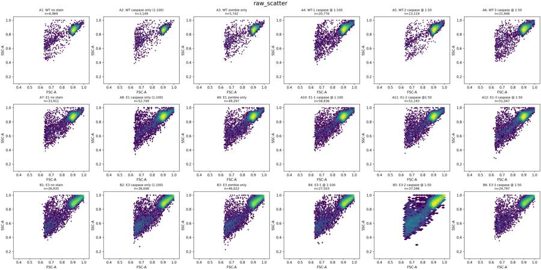
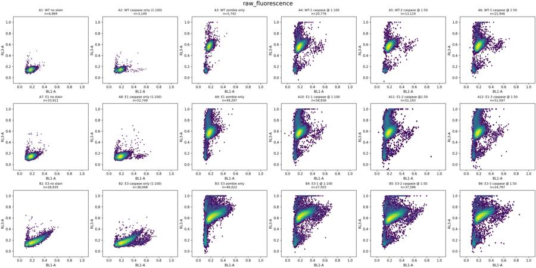
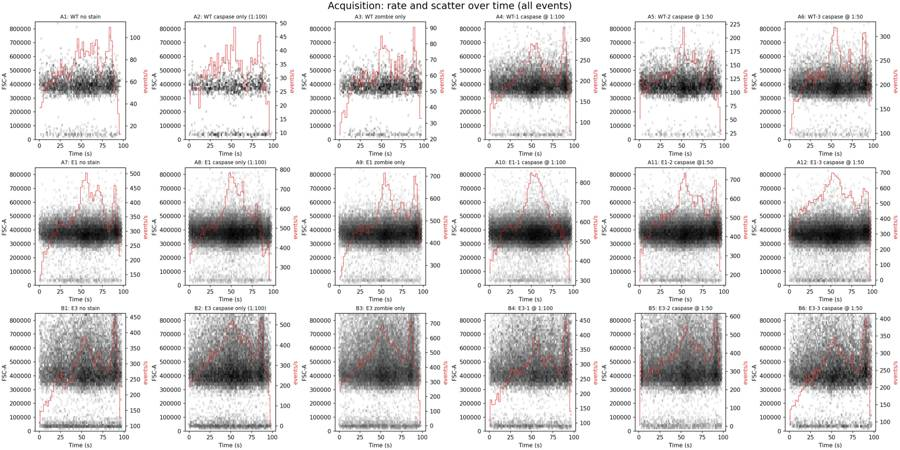
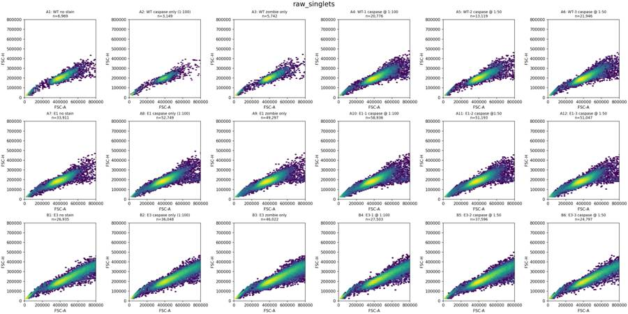
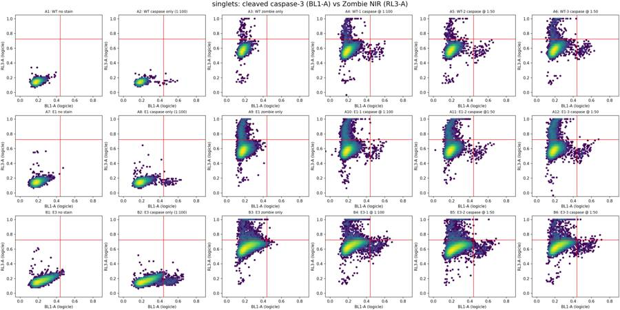
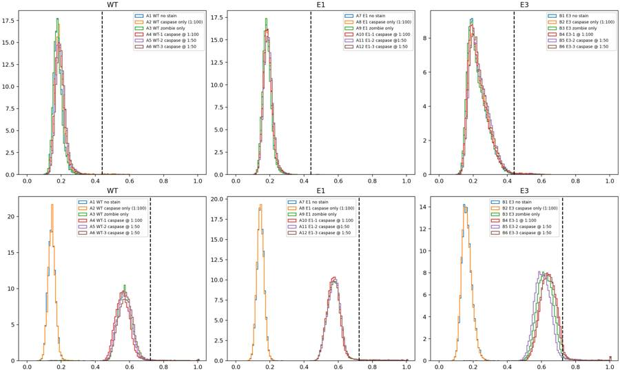
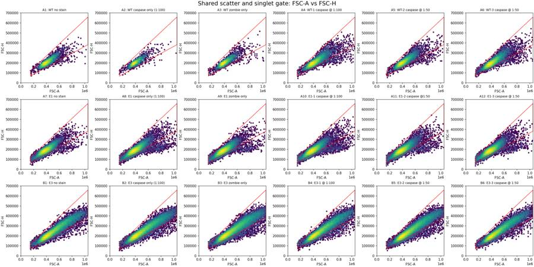
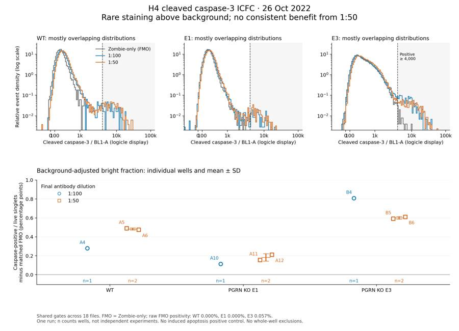
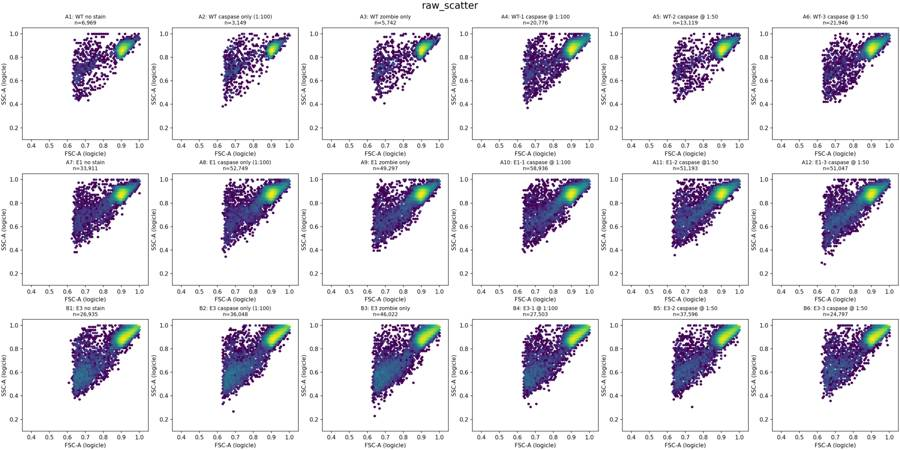

B2_flowkit · GPT-6 Astra · attempt pHejnSN
Batch fk1 · job fk1_B_EXP22004082_26_Oct_2022_flowkit_gpt-6-astra · trial B_EXP22004082_26_Oct_2022_flowki__pHejnSN. Long tool outputs are cut at 6,000 characters.
Score
0.59
0.59
Minutes
11.9
11.9
Agent cost
$4.32
$4.32
Steps
24
24
Screenshots / images
10
10
1
task prompt (instruction.md)
<environment_context> <cwd>/task</cwd> <shell>bash</shell> <current_date>2026-11-10</current_date> <timezone>Etc/UTC</timezone> <filesystem><workspace_roots><root>/task</root></workspace_roots><permission_profile type="disabled"><file_system type="unrestricted" /></permission_profile></filesystem> </environment_context>
2
user message
# Analyse the 26-Oct-2022 H4 caspase ICFC plate, answer the plan's question, recommend the next step
You are the analyst for this experiment: analyse the plate, answer the plan's question, and recommend the next step.
## Inputs (read-only)
| Path | Content |
|---|---|
| `/task/inputs/plan.md` | Notebook text up to this run: background, objective, materials, protocol, cytometer settings, plate maps |
| `/task/inputs/plate_layout.csv` | One row per FCS file: `file, well, sample, cell_line` (sample = plate-map label as written in the notebook) |
| `/task/inputs/raw/` | 18 FCS files (Attune NxT, FCS 3.1), unchanged |
## Environment
- **All gating is done with FlowKit**, including all population counts.
- Graders re-apply the gates in your saved gates to the raw files and check that they reproduce your counts.
- **Channel names.** The channel names stored in the FCS files are labels stored inside the FCS files, and they may be out of date. Work out which detector carries which reagent from the reagents and cytometer settings in `plan.md`.
- **Time budget:** 4 hours.
## Deliverables (all in `/task/outputs/`)
| Path | Content |
|---|---|
| `gates.xml` | Your gating strategy as GatingML 2.0, written with `flowkit.export_gatingml` (see *Software*). It must load with `flowkit.parse_gating_xml`. One gate per reported population, named exactly as the population. |
| `counts.csv` | Per file × population counts |
| `flags.csv` | Per-file QC decision |
| `condition_summary.csv` | Per-condition summary of the metric you use to answer the question |
| `figure.png` | Main result chart |
| `report.md` | Written analysis |
| `answer.json` | Structured answer and decision |
### `gates.xml`
- Your gating strategy as GatingML 2.0, written with `flowkit.export_gatingml` (see *Software*). It must load with `flowkit.parse_gating_xml("/task/outputs/gates.xml")`.
- Every population in `counts.csv` except `all_events` must be a gate in this file whose name is identical to the population name.
### `counts.csv`
- **Columns, in this order:** `file,well,population,role,parent,count,pct_of_parent`
- **One row per FCS file × population.** Cover all 18 files, with the same set of populations for every file.
- `file`: the exact FCS file name. `well`: the well from `plate_layout.csv`.
- **The `all_events` row.** Each file has one row with population `all_events`, role `other`, parent `none`, and an empty `pct_of_parent`.
- **`role`** is one of `cells`, `singlets`, `live`, `marker_positive`, `other`.
- Each of `cells`, `singlets`, `live` and `marker_positive` must be used by exactly one population, and that population must be the same in every file.
- Any additional populations use `other`.
- `parent`: the name of the parent population (`all_events` for the first gate).
- `count`: an integer event count from the full data.
- `pct_of_parent`: 100 × count / parent count. Leave it empty when the parent count is 0.
### `flags.csv`
- **Columns, in this order:** `file,well,issue_type,evidence,decision`
- One row per FCS file, covering all 18 files.
- `issue_type` is one of `none`, `clog`, `ran_dry`, `too_few_events`, `saturation`, `bad_control`, `mislabel`, `other`.
- `decision` is one of `keep`, `keep_with_note`, `exclude`. Rows with `issue_type` = `none` use `keep`.
- `evidence` is required whenever `issue_type` is not `none`, and it must cite at least one number observed in the data.
- Flag any well whose data should not be used, with evidence.
### `condition_summary.csv`
- **Columns, in this order:** `condition,wells,n_wells_used,mean,sd,metric_definition,normalisation_applied`
- One row per condition. You name the conditions.
- `wells`: the plate wells used for that condition, separated by `;`, using the well IDs from `plate_layout.csv`.
- `n_wells_used`: an integer equal to the number of wells listed.
- `mean`, `sd`: numbers computed across the listed wells. Leave `sd` empty if `n_wells_used` = 1.
- `metric_definition`: the metric as numerator population / denominator population, with units.
- `normalisation_applied`: the normalisation as an explicit formula, or `none`.
### `figure.png`
- The chart that shows the main result.
### `report.md`
- Use these level-2 headings, in this order: `## Question`, `## Methods`, `## Results`, `## Conclusion`, `## Caveats`, `## Recommendation`.
### `answer.json`
```
{
"question": str,
"comparisons": [
{"comparison": str, "a": <condition>, "b": <condition>,
"direction": "increase" | "decrease" | "no_clear_change",
"magnitude": str, "confidence": "high" | "medium" | "low"}
],
"overall_answer": "yes: …" | "partial: …" | "no: …",
"assay_verdict": "fit_for_purpose" | "needs_optimisation" | "not_fit_for_purpose",
"next_action": <ACTION>,
"next_change": {"what": str, "from": str, "to": str, "why": str},
"excluded_wells": [well IDs],
"caveats": [str]
}
```
- **`comparisons`**: at least one item.
- `a` and `b` must be `condition` values from `condition_summary.csv`.
- `direction` describes b relative to a (b − a).
- **`overall_answer`** starts with `yes:`, `partial:` or `no:`.
- **`next_action`** is one of: `proceed_as_planned`, `repeat_unchanged`, `repeat_with_change`, `optimise_reagent_or_setting`, `change_treatment_or_timing`, `switch_assay`, `stop`.
- `next_change`: the change you recommend, as an object: `what` (the step, reagent or condition to change), `from` (its value as run), `to` (the value you recommend) and `why`. Use empty strings if you recommend no change.
- **`excluded_wells`**: exactly the wells with `decision` = `exclude` in `flags.csv`.
## Software (FlowKit version of this task)
- **Python 3 with FlowKit 1.2.3** (plus flowio, numpy, pandas, scipy, matplotlib, openpyxl) is installed. There is no graphical analysis program.
- **Load** each file with `flowkit.Sample(path)`. Build **one** `flowkit.GatingStrategy` for all wells, with `flowkit.Dimension` and `flowkit.gates.RectangleGate`, `PolygonGate` or `EllipsoidGate` (no quadrant or Boolean gates).
- **Gate names** must be valid XML IDs: letters, digits and underscores, starting with a letter (no spaces or `+`).
- **One gate per reported population**, named exactly as the population and nested under its parent population (the first population's gate sits at the root). A population's events are its own gate within its parent.
- **Compensation.** Your choice. Every gate dimension must state its `compensation_ref` (`"uncompensated"`, `"FCS"` for the file's own spillover matrix, or the id of a matrix you add to the strategy).
- **Channels.** FlowKit gate dimensions use the detector ID (`$PnN`, e.g. `BL1-A`), not the text label.
- **Transforms.** You may draw gates on transformed axes (for example `flowkit.transforms.LogicleTransform`, added with `add_transform` and referenced by `transformation_ref`).
- **Save** the strategy with `flowkit.export_gatingml(strategy, open("/task/outputs/gates.xml", "wb"))` and check that it reloads with `flowkit.parse_gating_xml`.
- **Counts.** `counts.csv` must be the counts these saved gates give on each file (`strategy.gate_sample(sample)`), with no per-well changes.
- **Looking at data.** Save plots as PNG files and open the image files to view them.
---
## How you work
You work in a **terminal** (bash, working directory `/task`).
- **Inputs** are in `/task/inputs/` (read-only). **Write every deliverable to `/task/outputs/`.** Only that folder is collected for grading.
- **Limits.** There is no limit on the number of actions; the only limit is the time budget above. Save `gates.xml` and your output files early and often.
3
agent
I’ll read the plan to identify the assay channels and question, then inspect all 18 files, build a shared FlowKit gating strategy, and use the QC-qualified wells to answer the question and recommend the next step.
tool call · exec
const results = await Promise.allSettled([
tools.exec_command({cmd:"pwd && rg --files -g 'AGENTS.md' -g '!inputs/raw/**' -g '!outputs/**' /task /installed-agent 2>/dev/null | head -80","max_output_tokens":4000}),
tools.exec_command({cmd:"cat /task/inputs/plan.md","max_output_tokens":18000}),
tools.exec_command({cmd:"cat /task/inputs/plate_layout.csv && ls -lh /task/inputs/raw","max_output_tokens":4000}),
tools.exec_command({cmd:"python - <<'PY'\nimport flowkit as fk, inspect\nprint('FlowKit', fk.__version__)\nprint('Sample', inspect.signature(fk.Sample))\nprint('Dimension', inspect.signature(fk.Dimension))\nprint('Rectangle', inspect.signature(fk.gates.RectangleGate))\nprint('Polygon', inspect.signature(fk.gates.PolygonGate))\nprint('GatingStrategy', inspect.signature(fk.GatingStrategy))\nPY","max_output_tokens":3000})
]); for (let i=0;i<results.length;i++) text({i,...results[i]});
tool output
Script completed
Wall time 2.4 seconds
Output:
{"i":0,"status":"fulfilled","value":{"chunk_id":"952266","wall_time_seconds":0.00000375,"exit_code":0,"original_token_count":2,"output":"/task\n"}}
{"i":1,"status":"fulfilled","value":{"chunk_id":"b0f242","wall_time_seconds":0.000004154,"exit_code":0,"original_token_count":1163,"output":"# Plan: EXP22004082 | Testing Flow Cytometry based Caspase Assays (run of 2022-10-25 / 2022-10-26)\n\nNotebook text as written by the scientist, up to acquisition of this run. Sections belonging to other runs of this entry are omitted. Row and column labels in the plate tables were added for readability.\n\n## Background\nLoss of function of PGRN has been shown to negatively impact neural cell health reflected by increased cell death and caspase activity.\nCaspases are important mediators of the cell death pathway (apoptosis). Caspases are a group of proteases that result in cleavage of protein substrates subsequently leading to cell disassembly. For the PGRN RNAswap program we will want to measure caspase activity in iPSC derived neurons before and after adding the PGRN RNAswap constructs to ensure that PGRN protein replacement is rescuing the health of neurons. Previously I have tested out some caspase activity kits but now I will be trying to detect caspase levels using flow cytometry.\n\n## Objective\nMeasure caspase 3 activity using flow cytometry in H4 cells to practice using this assay which will eventually be used in iPSC derived neurons.\n\n## Materials (entry-level list)\n- H4 WT cells\n- H4 PGRN KO E1\n- H4 PGRN KO E3\n- H4 media\n- CellEvent Caspase-3/7 Green Flow Cytometry Assay Kit\n- Cell Signalling (Cleaved Caspase-3 (Asp175) Antibody (Alexa Fluor® 488 Conjugate) #9669)\n- Camptothecin (abcam)\n\n## DAY 2022-10-25\nTest out Cell Signaling Cleaved-Caspase 3 Alexa-flour 488 antibody\n- Split H4 cells into 24 well plate (50K cells/well)\n\n| | 1 | 2 | 3 | 4 | 5 | 6 |\n|---|---|---|---|---|---|---|\n| A | WT | WT | WT | WT | WT | WT |\n| B | E1 | E1 | E1 | E1 | E1 | E1 |\n| C | E3 | E3 | E3 | E3 | E3 | E3 |\n| D | | | | | | |\n\n2. Let cells grow for o/n\n\n## DAY 2022-10-26\nRun Intracellular flow:\n\n### Materials\n- 96w round bottom plate\n- Intracellular Fixation & Permeabilization Buffer Set (cat. no. 88-8824)\n- Flow Cytometry Staining Buffer (cat. no. 00-4222)\n- Zombie NIR Biolgend (423105)\n- Caspase-3 antibody (9669S)\n\n### Procedure\n- Aspirate all media\n- PBS wash (200uL PBS)\n- Aspirate PBS\n- Add 10x Trypsin (150ul/well)\n- Put back in incubator (5min)\n- Add FBS (75ul/well)\n- Move all solution and cells to a round-bottom 96w plate.\n Check the empty plate by microscope to confirm that the majority of cells were lifted\n- Spin down (300g, 5min)\n- PBS wash (200uL PBS)\n- Aspirate PBS\n- Stain with Zombie NIR (1:200 dilution in PBS, 150ul/well)\n- Put back in incubator (15min)\n- Spin down and remove all Zombie NIR with a P200 multichannel\n- Fix the cells in IC Fixation Buffer (200uL/well, 30min, RT, dark). Pipet gently to resuspend cells\n- Spin down (400-600g, 5min, RT) (400xg this time)\n- Remove all solution with a P200 multichannel\n **Do not throw fix down the drain!! Collect and add to waste container in hood\n- Permeabilize the cells in 1X Permeabilization Buffer (200uL/well, 30min, RT, dark).\n- Spin down (400-600g, 5min, RT).\n- Remove all solution with a P200 multichannel\n **Do not throw fix down the drain!! Collect and add to waste container in hood\n- Resuspend cells with 100uL/well with 1X Permeabilization Buffer.\n- Prepare antibodies in 100 uL/well of 1x Permeabilization Buffer.\n Example: for a final 1:200 dilution, add 1 ul Ab to 100 ul of pearmeabilization buffer. Add to well which already has 100 ul of buffer (final dilution is 1:200).\n Without washing, add the antibody solution of intracellular antigen(s) to cells and incubate for at least 30 minutes at RT and protect from light. Alternatively, incubate overnight at 4C (200ul/well, dark).\n For Caspase antibody: 1:50 (4uL into 96uL buffer). Will also try 1:100 (2uL into 98uL buffer)\n- Spin down (400-600g, 5 min, RT)\n- Add 200 µL of 1X Permeabilization Buffer to each well and centrifuge samples at 400-600 x g (400xg this time) at room temperature for 5 minutes. Discard the supernatant.\n- Repeat last step\n- Resuspend stained cells in an appropriate volume of Flow Cytometry Staining Buffer.\n- Analyze by flow cytometry (ATTUNE).\n\n### Attune Voltage Settings\nFSC-20; SSC-290; BL1 (caspase)-250; RL3 (Zombie NIR)-350\n\n### Flow plate (96-well)\n\n| | 1 | 2 | 3 | 4 | 5 | 6 | 7 | 8 | 9 | 10 | 11 | 12 |\n|---|---|---|---|---|---|---|---|---|---|---|---|---|\n| A | WT no stain | WT caspase only (1:100) | WT zombie only | WT-1 caspase @ 1:100 | WT-2 caspase @ 1:50 | WT-3 caspase @ 1:50 | E1 no stain | E1 caspase only (1:100) | E1 zombie only | E1-1 caspase @ 1:100 | E1-2 caspase @1:50 | E1-3 caspase @ 1:50 |\n| B | E3 no stain | E3 caspase only (1:100) | E3 zombie only | E3-1 @ 1:100 | E3-2 caspase @ 1:50 | E3-3 caspase @ 1:50 | | | | | | |\n"}}
{"i":2,"status":"fulfilled","value":{"chunk_id":"2f5836","wall_time_seconds":0.00000212,"exit_code":0,"original_token_count":761,"output":"file,well,sample,cell_line\nCaspase_h4_mlk(4)_caspase_Group_A1_WT_no stain.fcs,A1,WT no stain,WT\nCaspase_h4_mlk(4)_caspase_Group_A2_Wt_caspase_1-100.fcs,A2,WT caspase only (1:100),WT\nCaspase_h4_mlk(4)_caspase_Group_A3_Wt_zombie.fcs,A3,WT zombie only,WT\nCaspase_h4_mlk(4)_caspase_Group_A4_Wt-1_1-100.fcs,A4,WT-1 caspase @ 1:100,WT\nCaspase_h4_mlk(4)_caspase_Group_A5_wt-2_1-50.fcs,A5,WT-2 caspase @ 1:50,WT\nCaspase_h4_mlk(4)_caspase_Group_A6_wt3_1-50.fcs,A6,WT-3 caspase @ 1:50,WT\nCaspase_h4_mlk(4)_caspase_Group_A7_E1_no stain.fcs,A7,E1 no stain,E1\nCaspase_h4_mlk(4)_caspase_Group_A8_E1_caspase_1-100.fcs,A8,E1 caspase only (1:100),E1\nCaspase_h4_mlk(4)_caspase_Group_A9_E1_zombie.fcs,A9,E1 zombie only,E1\nCaspase_h4_mlk(4)_caspase_Group_A10_E1-1_1-100.fcs,A10,E1-1 caspase @ 1:
… [2,975 more characters not shown]tool call · exec
text(await tools.exec_command({cmd:"mkdir -p /task/outputs && python - <<'PY'\nfrom pathlib import Path\nimport flowkit as fk, pandas as pd, inspect\nlayout=pd.read_csv('/task/inputs/plate_layout.csv')\ns=fk.Sample('/task/inputs/raw/'+layout.file.iloc[0])\nprint(s.channels.to_string(index=False))\nprint('metadata:')\nfor k,v in s.metadata.items():\n if not k.startswith('p') or k in ['par']:\n print(k, v)\nprint('Sample methods', [m for m in dir(s) if not m.startswith('_')])\nfor c,n in [(fk.GatingStrategy,'gate_sample'),(fk.GatingStrategy,'add_gate'),(fk.transforms.LogicleTransform,'__init__')]:\n print(n, inspect.signature(getattr(c,n)))\nprint(inspect.getsource(fk.GatingResults.get_gate_count))\nPY","max_output_tokens":10000}));
text(ALL_TOOLS.filter(x=>/search|browse|web/i.test(x.name+" "+x.description)).map(x=>({name:x.name,description:x.description.slice(0,150)})).slice(0,60));
tool output
Script completed
Wall time 1.1 seconds
Output:
{"chunk_id":"523119","wall_time_seconds":0.965894139,"exit_code":1,"original_token_count":885,"output":"Traceback (most recent call last):\n File \"<stdin>\", line 13, in <module>\n channel_number pnn pns png pne pnr\n 1 Time Time 1.0 (0.0, 0.0) 67108864.0\n 2 FSC-A FSC-A 1.0 (0.0, 0.0) 1048576.0\n 3 SSC-A SSC-A 1.0 (0.0, 0.0) 1048576.0\n 4 BL1-A AAV-GFP-GFP-A 1.0 (0.0, 0.0) 1048576.0\n 5 RL3-A LiveDead-Zombie NIR-A 1.0 (0.0, 0.0) 1048576.0\n 6 FSC-H FSC-H 1.0 (0.0, 0.0) 1048576.0\n 7 SSC-H SSC-H 1.0 (0.0, 0.0) 1048576.0\n 8 BL1-H AAV-GFP-GFP-H 1.0 (0.0, 0.0) 1048576.0\n 9 RL3-H LiveDead-Zombie NIR-H 1.0 (0.0, 0.0) 1048576.0\n 10 FSC-W FSC-W 1.0 (0.0, 0.0) 1024.0\n 11 SSC-W SSC-W 1.0 (0.0, 0.0) 1024.0\n 12 BL1-W AAV-GFP-GFP-W 1.0 (0.0, 0.0) 1024.0\n 13 RL3-W LiveDead-Zombie NIR-W 1.0 (0.0, 0.0) 1024.0\nmetadata:\npar 13\ntot 6969\nmode L\ndatatype F\nbyteord 1,2,3,4\ncyt 0A29009 Attune NxT Acoustic Focusing Cytometer (Lasers: BRV6Y)\nsys SEA11065ATTUNE Microsoft Windows 10 Enterprise LTSC\nspillover 6,BL1-A,RL3-A,BL1-H,RL3-H,BL1-W,RL3-W,1.000000,0.000000,0.000000,0.000000,0.000000,0.000000,0.000000,1.000000,0.000000,0.000000,0.000000,0.000000,0.000000,0.000000,1.000000,0.000000,0.000000,0.000000,0.000000,0.000000,0.000000,1.000000,0.000000,0.000000,0.000000,0.000000,0.000000,0.000000,1.000000,0.000000,0.000000,0.000000,0.000000,0.000000,0.000000,1.000000\nbtim 11:55:08\ncells NA\ncom NA\ncytsn 2AFC228071019\ndate 26-Oct-2022\netim 11:56:46\nexp NA\nfil A1_WT_no stain.fcs\ninst NA\noriginality Original\nlost 0\nop Jeff Huang\nsmno Group\nsrc NA\ntimestep 0.001\nvol 164000\nwellid A1\n#coincidentcount 5\n#flowrate 100\n#laser1asf 1.06\n#laser1color Blue\n#laser1delay 1100\n#laser2asf 1.11\n#laser2color Red\n#laser2delay 1493\n#laser3asf 1.03\n#laser3color Violet\n#laser3delay 720\n#laser4asf 1.00\n#laser4color Yellow\n#laser4delay 312\n#laserconfig BRV6Y\n#p12label GFP\n#p12target AAV-GFP\n#p13label Zombie NIR\n#p13target LiveDead\n#p1label NA\n#p1target NA\n#p4label GFP\n#p4target AAV-GFP\n#p5label Zombie NIR\n#p5target LiveDead\n#p8label GFP\n#p8target AAV-GFP\n#p9label Zombie NIR\n#p9target LiveDead\n#ptdate 26-Oct-2022\n#ptresult Pass\n#tr1 OR_FSC,25000\n#widththreshold 1000\n#winext 0\nhostid SEA11065ATTUNE\nbegindata 000000008192\nenddata 000000370579\nnextdata 000000000000\nbeginstext 000000000000\nendstext 000000000000\nbeginanalysis 000000000000\nendanalysis 000000000000\nSample methods ['acquisition_date', 'apply_compensation', 'apply_transform', 'as_dataframe', 'channels', 'compensation', 'current_filename', 'event_count', 'export', 'filter_negative_scatter', 'flagged_indices', 'fluoro_indices', 'get_channel_events', 'get_channel_index', 'get_channel_number_by_label', 'get_events', 'get_index_sorted_locations', 'get_metadata', 'id', 'metadata', 'negative_scatter_indices', 'null_channels', 'original_filename', 'plot_channel', 'plot_contour', 'plot_histogram', 'plot_scatter', 'plot_scatter_matrix', 'pnn_labels', 'pns_labels', 'rename_channel', 'scatter_indices', 'set_flagged_events', 'subsample_events', 'subsample_indices', 'time_index', 'transform', 'version']\ngate_sample (self, sample, cache_events=False, verbose=False)\nadd_gate (self, gate, gate_path, sample_id=None)\n__init__ (self, param_t, param_w, param_m, param_a)\nAttributeError: module 'flowkit' has no attribute 'GatingResults'\n"}
[{"name":"list_mcp_resource_templates","description":"Lists resource templates provided by MCP servers. Parameterized resource templates allow servers to share data that takes parameters and provides cont"},{"name":"list_mcp_resources","description":"Lists resources provided by MCP servers. Resources allow servers to share data that provides context to language models, such as files, database schem"},{"name":"web__run","description":"Tool for accessing the internet.\n\n\n---\n\n## Examples of different commands available in this tool\n\nExamples of different commands available in this too"}]tool call · exec
text(await tools.apply_patch("*** Begin Patch\n*** Add File: /task/outputs/explore.py\n+from pathlib import Path\n+import json\n+import flowkit as fk\n+import numpy as np\n+import pandas as pd\n+import matplotlib\n+matplotlib.use('Agg')\n+import matplotlib.pyplot as plt\n+\n+OUT = Path('/task/outputs')\n+LAYOUT = pd.read_csv('/task/inputs/plate_layout.csv')\n+SAMPLES = {r.well: fk.Sample('/task/inputs/raw/' + r.file) for r in LAYOUT.itertuples()}\n+LOGICLE = fk.transforms.LogicleTransform(param_t=1048576, param_w=0.5, param_m=4.5, param_a=0)\n+\n+def ch(s, name):\n+ return s.get_channel_events(name, source='raw')\n+\n+def axes_grid(title):\n+ fig, axs = plt.subplots(3, 6, figsize=(22, 11), constrained_layout=True)\n+ fig.suptitle(title, fontsize=17)\n+ return fig, axs.ravel()\n+\n+def scatter_grid(x, y, name, log=False, xlim=None, ylim=None):\n+ fig, axs = axes_grid(name)\n+ for ax, r in zip(axs, LAYOUT.itertuples()):\n+ s=SAMPLES[r.well]\n+ a,b=ch(s,x),ch(s,y)\n+ if log: a,b=LOGICLE.apply(a),LOGICLE.apply(b)\n+ ax.hexbin(a,b,gridsize=65,mincnt=1,bins='log',cmap='viridis')\n+ ax.set_title(f'{r.well}: {r.sample}\\nn={s.event_count:,}', fontsize=9)\n+ ax.set(xlabel=x, ylabel=y)\n+ if xlim: ax.set_xlim(*xlim)\n+ if ylim: ax.set_ylim(*ylim)\n+ fig.savefig(OUT/(name+'.png'), dpi=150)\n+ plt.close(fig)\n+\n+if __name__ == '__main__':\n+ summaries=[]\n+ metadata={}\n+ for r in LAYOUT.itertuples():\n+ s=SAMPLES[r.well]\n+ metadata[r.well]=s.metadata\n+ d={'well':r.well,'sample':r.sample,'events':s.event_count}\n+ for name in ['Time','FSC-A','SSC-A','FSC-H','FSC-W','BL1-A','RL3-A']:\n+ a=ch(s,name)\n+ for q in [0,.01,.1,.5,.9,.99,1]: d[f'{name}_q{q:g}']=np.quantile(a,q)\n+ summaries.append(d)\n+ pd.DataFrame(summaries).to_csv(OUT/'raw_descriptives.csv',index=False)\n+ (OUT/'metadata.json').write_text(json.dumps(metadata,indent=2))\n+ print(pd.DataFrame(summaries)[['well','sample','events','Time_q0','Time_q1','FSC-A_q0.5','SSC-A_q0.5','BL1-A_q0.5','RL3-A_q0.5']].to_string(index=False))\n+ scatter_grid('FSC-A','SSC-A','raw_scatter',log=True,xlim=(.35,1.05),ylim=(.1,1.05))\n+ scatter_grid('FSC-A','FSC-H','raw_singlets',xlim=(0,800000),ylim=(0,800000))\n+ scatter_grid('BL1-A','RL3-A','raw_fluorescence',log=True,xlim=(-.1,1.1),ylim=(-.1,1.1))\n+ fig,axs=axes_grid('Acquisition: rate and scatter over time (all events)')\n+ for ax,r in zip(axs,LAYOUT.itertuples()):\n+ s=SAMPLES[r.well]\n+ t,f=ch(s,'Time'),ch(s,'FSC-A')\n+ ax.hexbin(t,f,gridsize=65,mincnt=1,bins='log',cmap='Greys')\n+ ax.set_ylim(0,850000)\n+ ax.set(xlabel='Time (s)',ylabel='FSC-A')\n+ ax.set_title(f'{r.well}: {r.sample}',fontsize=9)\n+ other=ax.twinx()\n+ h,b=np.histogram(t,bins=np.arange(0,max(t)+2,2))\n+ other.step(b[:-1]+1,h/2,color='tab:red',alpha=.75,linewidth=1)\n+ other.set_ylabel('events/s',color='tab:red')\n+ fig.savefig(OUT/'acquisition_qc.png',dpi=150)\n+ plt.close(fig)\n*** End Patch"));
text(await tools.exec_command({cmd:"python /task/outputs/explore.py","yield_time_ms":1000,"max_output_tokens":6000}));
text(await tools.web__run({search_query:[{q:'site.cellsignal.com 9669 cleaved caspase-3 Asp175 Alexa Fluor 488 flow cytometry dilution'},{q:'site.biolegend.com Zombie NIR 423105 excitation emission fixation permeabilization'}],response_length:"long"}));
tool output
Script completed
Wall time 2.2 seconds
Output:
{}
{"chunk_id":"7d015f","wall_time_seconds":1.001271522,"session_id":90653,"original_token_count":0,"output":""}
Cleaved Caspase-3 (Asp175) Antibody (Alexa Fluor® 488 Conjugate) | Cell Signaling Technology (https://www.cellsignal.com/products/antibody-conjugates/cleaved-caspase-3-asp175-antibody-alexa-fluor-488-conjugate/9669)
citeturn0search0 [wordlim: 200] Published: 7 months ago; Crawled: 2 months ago; # Cleaved Caspase-3 (Asp175) Antibody (Alexa Fluor^{®} 488 Conjugate) #9669 ... This Cell Signaling Technology antibody is conjugated to Alexa Fluor^{®} 488 fluorescent dye and tested in-house for direct flow cytometry analysis in human cells.
# Cleaved Caspase-3 (Asp175) Antibody (Alexa Fluor^{®} 488 Conjugate) #9669
Filter:
* F
Image: Flow Cytometry Image 1: Cleaved Caspase-3 (Asp175) Antibody (Alexa Fluor® 488 Conjugate)
Flow cytometric analysis of Jurkat cells, untreated (blue) or treated with etoposide #2200 (25 μM, overnight; green), using Cleaved Caspase-3 (Asp175) Antibody (Alexa Fluor^{®} 488 Conjugate) (solid lines) or concentration-matched Rabbit (DA1E) mAb IgG XP^{®} Isotype Control (Alexa Fluor^{®} 488 Conjugate) #2975 (dashed line).
Show more
1/1
Learn more about how we get our images
To Purchase # 9669
Cat. # | Size | Qty. | Price
--- | --- | --- | ---
9669S | 100 µl 50 tests | [Input: 0] | $493
Certificate of Analysis
* Product Specifications
* Related Products
* Product Usage
* Protocols
* Background
* Pathways
### Product Specifications
REACTIVITY | H M R Mk
SENSITIVITY | Endogenous
MW (kDa) |
SOURCE | Rabbit
##### Application Key:
* F-Flow Cytometry
##### Species Cross-Reactivity Key:
* H-Human
* M-Mouse
* R-Rat
* Mk-Monkey
## Product Information
### Product Description
This Cell Signaling Technology antibody is conjugated to Alexa Fluor^{®} 488 fluorescent dye and tested in-house for direct flow cytometry analysis in human cells. The antibody is expected to exhibit the same species cross-reactivity as the unconjugated Cleaved Caspase-3 (Asp175) Antibody #9661.
### Product Usage Information
Application | Dilution
--- | ---
Flow Cytometry (Fixed/Permeabilized) | 1:50
### Storage
Supplied in PBS (pH 7.2), less than 0.1% sodium azide and 2 mg/ml BSA. Store at 4°C. Do not aliquot the antibody. Protect from light. Do not freeze.
### Protocol
[Select]
### Specificity / Sensitivity
Cleaved Caspase-3 (Asp175) Antibody (Alexa Fluor^{®} 488 Conjugate) detects endogenous levels of the large fragment (17/19 kDa) of activated caspase-3 resulting from cleavage adjacent to aspartic acid 175. --------------------------------------------------------------------------------
Cleaved Caspase-3 (Asp175) Antibody (Alexa Fluor® 488 Conjugate) (#9669) Datasheet With Images | Cell Signaling Technology (https://www.cellsignal.com/products/9669/datasheet?images=1&protocol=0)
citeturn0search1 [wordlim: 200] Crawled: last month; This Cell Signaling Technology antibody is conjugated to Alexa Fluor^{®} 488 fluorescent dye and tested in-house for direct flow cytometry analysis in human cells. The antibody is expected to exhibit the same species cross-reactivity as the unconjugated Cleaved Caspase-3 (Asp175) Antibody #9661. ... Image: Flow Cytometry Image 1: Cleaved Caspase-3 (Asp175) Antibody (Alexa Fluor<sup>®</sup> 488 Conjugate)
Revision 4
#9669
Store at +4C
Cleaved Caspase-3 (Asp175) Antibody (Alexa Fluor^{®} 488 Conjugate)
For Research Use Only. Not for Use in Diagnostic Procedures.
Applications:
FC-FP
Reactivity:
H M R Mk
Sensitivity:
Endogenous
Source/Isotype:
Rabbit
UniProt ID:
#P42574
Entrez-Gene Id:
836
### Product Usage Information
Application | Dilution
--- | ---
Flow Cytometry (Fixed/Permeabilized) | 1:50
### Storage
Supplied in PBS (pH 7.2), less than 0.1% sodium azide and 2 mg/ml BSA. Store at 4°C. Do not aliquot the antibody. Protect from light. Do not freeze.
### Specificity/Sensitivity
Cleaved Caspase-3 (Asp175) Antibody (Alexa Fluor^{®} 488 Conjugate) detects endogenous levels of the large fragment (17/19 kDa) of activated caspase-3 resulting from cleavage adjacent to aspartic acid 175. This antibody conjugate does not recognize full length caspase-3 or other cleaved caspases.
### Species predicted to react based on 100% sequence homology
Bovine, Dog, Pig
### Source / Purification
Polyclonal antibodies are produced by immunizing animals with a synthetic peptide corresponding to amino-terminal residues adjacent to Asp175 of human caspase-3. --------------------------------------------------------------------------------
Cleaved Caspase-3 (Asp175) Antibody (Alexa Fluor® 488 Conjugate) | Cell Signaling Technology (https://www.cellsignal.jp/products/antibody-conjugates/cleaved-caspase-3-asp175-antibody-alexa-fluor-488-conjugate/9669)
citeturn0search2 [wordlim: 200] Published: 7 months ago; Crawled: 4 months ago; # Cleaved Caspase-3 (Asp175) Antibody (Alexa Fluor^{®} 488 Conjugate) #9669 ... This Cell Signaling Technology antibody is conjugated to Alexa Fluor^{®} 488 fluorescent dye and tested in-house for direct flow cytometry analysis in human cells.
# Cleaved Caspase-3 (Asp175) Antibody (Alexa Fluor^{®} 488 Conjugate) #9669
Filter:
* F
### Product Specifications
REACTIVITY | H M R Mk
SENSITIVITY | Endogenous
MW (kDa) |
SOURCE | Rabbit
##### Application Key:
* F-Flow Cytometry
##### Species Cross-Reactivity Key:
* H-Human
* M-Mouse
* R-Rat
* Mk-Monkey
## Product Information
### Product Description
This Cell Signaling Technology antibody is conjugated to Alexa Fluor^{®} 488 fluorescent dye and tested in-house for direct flow cytometry analysis in human cells. The antibody is expected to exhibit the same species cross-reactivity as the unconjugated Cleaved Caspase-3 (Asp175) Antibody #9661.
### Product Usage Information
Application | Dilution
--- | ---
Flow Cytometry (Fixed/Permeabilized) | 1:50
##
… [24,055 more characters not shown]tool call · exec
text(await tools.write_stdin({session_id:90653,chars:"",yield_time_ms:1000,max_output_tokens:7000}));
const out = await Promise.allSettled([
tools.view_image({path:"/task/outputs/raw_scatter.png"}),
tools.view_image({path:"/task/outputs/raw_fluorescence.png"}),
tools.view_image({path:"/task/outputs/acquisition_qc.png"}),
]);for (const r of out){if(r.status==="fulfilled")image(r.value.image_url);else text(r.reason)}
tool output
Script completed
Wall time 0.0 seconds
Output:
{"chunk_id":"fc2d26","wall_time_seconds":0.000003206,"exit_code":1,"original_token_count":149,"output":"Traceback (most recent call last):\n File \"/task/outputs/explore.py\", line 45, in <module>\n a=ch(s,name)\n ^^^^^^^^^^\n File \"/task/outputs/explore.py\", line 16, in ch\n return s.get_channel_events(name, source='raw')\n ^^^^^^^^^^^^^^^^^^^^^^^^^^^^^^^^^^^^^^^^\n File \"/usr/local/lib/python3.12/site-packages/flowkit/_models/sample.py\", line 757, in get_channel_events\n events = events[:, channel_index]\n ~~~~~~^^^^^^^^^^^^^^^^^^\nIndexError: only integers, slices (`:`), ellipsis (`...`), numpy.newaxis (`None`) and integer or boolean arrays are valid indices\n"}
unable to locate image at `/task/outputs/raw_scatter.png`: No such file or directory (os error 2)
unable to locate image at `/task/outputs/raw_fluorescence.png`: No such file or directory (os error 2)
unable to locate image at `/task/outputs/acquisition_qc.png`: No such file or directory (os error 2)tool call · exec
text(await tools.apply_patch("*** Begin Patch\n*** Update File: /task/outputs/explore.py\n@@\n- return s.get_channel_events(name, source='raw')\n+ return s.get_channel_events(s.get_channel_index(name), source='raw')\n*** End Patch"));
text(await tools.exec_command({cmd:"python /task/outputs/explore.py","yield_time_ms":1000,"max_output_tokens":6000}));
tool output
Script completed
Wall time 1.2 seconds
Output:
{}
{"chunk_id":"7d6964","wall_time_seconds":1.000586116,"session_id":9355,"original_token_count":0,"output":""}8
agent
The plan identifies BL1-A as Alexa Fluor 488 cleaved caspase-3 and RL3-A as Zombie NIR; the BL1 “GFP” label in the files is stale. This run measures cleaved caspase-3 staining, a proxy for activation. The plate map contains no induced apoptosis positive control, which will limit how strongly the assay can be validated.
tool call · exec
text(await tools.write_stdin({session_id:9355,chars:"",yield_time_ms:1000,max_output_tokens:6000}));
const out = await Promise.allSettled([
tools.view_image({path:"/task/outputs/raw_scatter.png"}),
tools.view_image({path:"/task/outputs/raw_fluorescence.png"}),
tools.view_image({path:"/task/outputs/acquisition_qc.png"}),
tools.view_image({path:"/task/outputs/raw_singlets.png"})
]);for (const r of out){if(r.status==="fulfilled")image(r.value.image_url);else text(r.reason)}
tool output
Script completed Wall time 5.1 seconds Output:
{"chunk_id":"e8f50f","wall_time_seconds":5.00188845,"session_id":9355,"original_token_count":490,"output":"well sample events Time_q0 Time_q1 FSC-A_q0.5 SSC-A_q0.5 BL1-A_q0.5 RL3-A_q0.5\n A1 WT no stain 6969 0.026 97.946 396973.0 257036.0 244.0 112.0\n A2 WT caspase only (1:100) 3149 0.062 97.760 381505.0 245594.0 265.0 112.0\n A3 WT zombie only 5742 0.093 97.045 390715.0 259980.0 234.0 12097.0\n A4 WT-1 caspase @ 1:100 20776 0.080 96.952 399857.5 282267.0 287.0 11224.5\n A5 WT-2 caspase @ 1:50 13119 0.015 96.818 402810.0 275283.0 311.0 12422.0\n A6 WT-3 caspase @ 1:50 21946 0.016 97.905 393845.0 287716.5 319.0 13599.0\n A7 E1 no stain 33911 0.018 97.900 379360.0 282116.0 260.0 120.0\n A8 E1 caspase only (1:100) 52749 0.014 97.955 383114.0 291225.0 275.0 117.0\n A9 E1 zombie only 49297 0.022 97.987 375240.0 292003.0 253.0 13270.0\n A10 E1-1 caspase @ 1:100 58936 0.014 97.915 376790.5 293050.0 277.0 12891.0\n A11 E1-2 caspase @1:50 51193 0.014 97.164 379757.0 291058.0 293.0 13550.0\n A12 E1-3 caspase @ 1:50 51047 0.016 98.003 373523.0 287496.0 289.0 13367.0\n B1 E3 no stain 26935 0.024 97.077 462763.0 385472.0 390.0 179.0\n B2 E3 caspase only (1:100) 36048 0.026 98.012 459044.0 380176.5 444.0 174.0\n B3 E3 zombie only 46022 0.016 98.012 469917.0 391685.5 396.0 21634.0\n B4 E3-1 @ 1:100 27503 0.019 97.118 472951.0 381892.0 432.0 26136.0\n B5 E3-2 caspase @ 1:50 37596 0.457 97.993 467929.5 394073.5 484.0 18662.5\n B6 E3-3 caspase @ 1:50 24797 0.017 97.155 459613.0 391419.0 468.0 24678.0\n"}



tool call · exec
const results=await Promise.allSettled([
tools.exec_command({cmd:"python - <<'PY'\nimport pandas as pd,json\np=pd.read_csv('/task/outputs/raw_descriptives.csv')\nprint(p[['well','events']+[c for c in p if ('q0.01' in c or 'q0.99' in c or c.endswith('q1')) and not c.startswith('Time')]].to_string(index=False))\nm=json.load(open('/task/outputs/metadata.json'))\nprint('metadata differences:')\nfor k in m['A1']:\n v={w:d.get(k) for w,d in m.items()}\n if len(set(str(a) for a in v.values()))>1 and k not in ['tot','btim','etim','fil','wellid','enddata','smno']:\n print(k,v)\nPY","max_output_tokens":9000}),
tools.exec_command({cmd:"python - <<'PY'\nimport inspect,flowkit as fk\nfrom flowkit._models.gating_results import GatingResults\nfor n in ['get_gate_count','get_gate_membership','get_gate_relative_percent','get_gate_absolute_percent']:\n print(n,inspect.signature(getattr(GatingResults,n)))\nprint(inspect.getsource(fk.export_gatingml)[:4000])\nPY","max_output_tokens":5000})
]);for(let i=0;i<results.length;i++)text({i,...results[i]});
tool output
Script completed
Wall time 1.3 seconds
Output:
{"i":0,"status":"fulfilled","value":{"chunk_id":"c7c5fc","wall_time_seconds":0.229357204,"exit_code":0,"original_token_count":1228,"output":"well events FSC-A_q0.01 FSC-A_q0.99 FSC-A_q1 SSC-A_q0.01 SSC-A_q0.99 SSC-A_q1 FSC-H_q0.01 FSC-H_q0.99 FSC-H_q1 FSC-W_q0.01 FSC-W_q0.99 FSC-W_q1 BL1-A_q0.01 BL1-A_q0.99 BL1-A_q1 RL3-A_q0.01 RL3-A_q0.99 RL3-A_q1\n A1 6969 28033.52 732875.72 1048575.0 12065.52 620109.96 1048575.0 27764.44 340123.28 554958.0 56.68 149.32 232.0 -14.00 728.00 2326.0 -60.32 379.32 5298.0\n A2 3149 26818.40 693031.88 1048575.0 6664.68 696314.96 1048575.0 26685.68 319244.36 408558.0 52.00 146.00 243.0 -42.00 1427.84 16263.0 -57.08 599.44 4339.0\n A3 5742 27741.61 728545.55 1048575.0 13426.08 638667.69 1048575.0 27311.74 336256.54 515877.0 55.41 149.00 250.0 -23.00 683.13 4054.0 6.41 160212.21 1048575.0\n A4 20776 33326.25 857749.00 1048575.0 18854.75 732996.00 1048575.0 31815.50 360256.50 557722.0 61.00 162.00 354.0 9.00 1143.25 20046.0 62.00 153509.00 1048575.0\n A5 13119 36489.52 813554.82 1048575.0 23030.22 684403.08 1048575.0 33866.80 353652.70 553648.0 63.00 157.00 375.0 22.18 1255.82 29179.0 63.00 86800.06 1048575.0\n A6 21946 36684.55 797320.30 1048575.0 19857.90 688747.80 1048575.0 34202.90 357513.00 561613.0 63.00 155.00 308.0 15.00 1261.55 41920.0 101.90 260695.45 1048575.0\n A7 33911 37288.80 657029.70 1048575.0 24567.50 579508.20 1048575.0 33571.90 298761.40 515583.0 63.00 147.00 375.0 4.00 697.00 4492.0 -52.00 355.90 12789.0\n A8 52749 45179.24 739267.28 1048575.0 32597.32 621804.32 1048575.0 39786.04 305667.52 512545.0 68.00 159.00 370.0 23.48 806.00 34919.0 -53.00 344.00 47198.0\n A9 49297 41885.76 674846.56 1048575.0 23994.04 601589.92 1048575.0 35840.88 289170.80 552153.0 66.00 150.00 343.0 10.00 698.04 10482.0 251.92 283290.44 1048575.0\n A10 58936 47108.55 731769.10 1048575.0 27983.40 634920.70 1048575.0 38328.35 302386.70 562107.0 68.00 159.00 347.0 25.00 830.00 20786.0 338.35 306926.70 1048575.0\n A11 51193 41042.24 708634.24 1048575.0 23628.20 611913.80 1048575.0 35754.84 306775.88 546043.0 66.00 154.00 363.0 17.00 857.00 282555.0 210.00 320557.32 1048575.0\n A12 51047 38325.92 686220.94 1048575.0 16729.56 594971.62 1048575.0 32463.30 296291.56 607664.0 63.00 151.00 375.0 16.00 904.00 36379.0 226.92 468499.22 1048575.0\n B1 26935 28638.00 1048575.00 1048575.0 6468.74 1048575.00 1048575.0 27960.52 475969.14 611643.0 56.00 188.00 315.0 -27.00 2893.28 20396.0 -50.00 974.66 27332.0\n B2 36048 29108.46 1048575.00 1048575.0 6813.41 1048575.00 1048575.0 28436.94 479600.91 597300.0 57.00 191.00 318.0 -5.00 6374.00 80914.0 -52.00 912.53 19853.0\n B3 46022 30477.84 1048575.00 1048575.0 7214.15 1048575.00 1048575.0 29758.86 490097.59 621384.0 58.00 199.79 332.0 -19.00 3151.16 16526.0 160.21 385976.51 1048575.0\n B4 27503 30450.00 1048575.00 1048575.0 7354.42 1048575.00 1048575.0 29638.02 487617.28 666945.0 58.00 192.00 375.0 2.00 6095.94 50990.0 101.00 514976.36 1048575.0\n B5 37596 33768.55 1048575.00 1048575.0 11508.40 1048575.00 1048575.0 32103.90 490371.20 608577.0 61.00 197.00 375.0 12.00 5437.05 126657.0 158.00 376785.30 1048575.0\n B6 24797 31738.84 1048575.00 1048575.0 9904.84 1048575.00 1048575.0 30328.52 479115.44 630475.0 59.00 187.00 370.0 2.00 5313.24 223049.0 71.00 408338.16 1048575.0\nmetadata differences:\nvol {'A1': '164000', 'A2': '163000', 'A3': '162000', 'A4': '162000', 'A5': '162000', 'A6': '164000', 'A7': '164000', 'A8': '164000', 'A9': '164000', 'A10': '164000', 'A11': '162000', 'A12': '164000', 'B1': '162000', 'B2': '164000', 'B3': '164000', 'B4': '162000', 'B5': '164000', 'B6': '162000'}\n#coincidentcount {'A1': '5', 'A2': '2', 'A3': '10', 'A4': '56', 'A5': '21', 'A6': '35', 'A7': '76', 'A8': '219', 'A9': '190', 'A10': '244', 'A11': '167', 'A12': '174', 'B1': '52', 'B2': '93', 'B3': '158', 'B4': '54', 'B5': '101', 'B6': '32'}\n"}}
{"i":1,"status":"fulfilled","value":{"chunk_id":"a18421","wall_time_seconds":1.128918709,"exit_code":0,"original_token_count":459,"output":"get_gate_count (self, gate_name, gate_path=None)\nget_gate_membership (self, gate_name, gate_path=None)\nget_gate_relative_percent (self, gate_name, gate_path=None)\nget_gate_absolute_percent (self, gate_name, gate_path=None)\ndef export_gatingml(gating_strategy, file_handle, sample_id=None):\n \"\"\"\n Exports a valid GatingML 2.0 document from given GatingStrategy instance.\n Specify the sample ID to use that sample's custom gates in the exported\n file, otherwise the template gates will be exported.\n\n :param gating_strategy: A GatingStrategy instance\n :param file_handle: File handle for exported GatingML 2.0 document\n :param sample_id: an optional text string representing a Sample instance\n :r
… [1,160 more characters not shown]tool call · exec
text(await tools.exec_command({cmd:"python - <<'PY'\nimport pandas as pd\np=pd.read_csv('/task/outputs/raw_descriptives.csv');print(p[['well']+[c for c in p if c.endswith('_q0')]].to_string(index=False))\nPY","max_output_tokens":3000}));
text(await tools.clock__curr_time({}));
tool output
Script completed
Wall time 0.3 seconds
Output:
{"chunk_id":"883360","wall_time_seconds":0.154876975,"exit_code":0,"original_token_count":352,"output":"well Time_q0 FSC-A_q0 SSC-A_q0 FSC-H_q0 FSC-W_q0 BL1-A_q0 RL3-A_q0\n A1 0.026 23295.0 3131.0 25278.0 43.0 -91.0 -171.0\n A2 0.062 22518.0 2117.0 25220.0 41.0 -117.0 -153.0\n A3 0.093 22152.0 2606.0 25260.0 40.0 -96.0 -156.0\n A4 0.080 21556.0 1882.0 25220.0 40.0 -85.0 -1823.0\n A5 0.015 23900.0 3033.0 25163.0 42.0 -70.0 -3371.0\n A6 0.016 22787.0 2815.0 25204.0 38.0 -192.0 -430.0\n A7 0.018 22415.0 2113.0 25196.0 41.0 -100.0 -194.0\n A8 0.014 22966.0 -653.0 25178.0 41.0 -95.0 -146.0\n A9 0.022 21715.0 2210.0 25072.0 41.0 -126.0 -1697.0\n A10 0.014 21180.0 2151.0 25164.0 39.0 -702.0 -520.0\n A11 0.014 21910.0 1568.0 25124.0 41.0 -353.0 -12954.0\n A12 0.016 20436.0 801.0 25069.0 36.0 -118.0 -1325.0\n B1 0.024 19479.0 1726.0 25039.0 35.0 -122.0 -203.0\n B2 0.026 22053.0 -145.0 25191.0 37.0 -119.0 -189.0\n B3 0.016 22091.0 476.0 25157.0 37.0 -112.0 -5058.0\n B4 0.019 22429.0 -1215.0 25155.0 36.0 -109.0 -534.0\n B5 0.457 -65536.0 -2532.0 25220.0 39.0 -114.0 -1246.0\n B6 0.017 21177.0 1537.0 25085.0 36.0 -108.0 -1699.0\n"}
{"current_time":"2026-11-10 17:09:57 UTC"}11
agent
E3 has higher baseline green fluorescence than WT and E1, so its unstained and Zombie-only controls will matter for interpreting caspase positivity. I’m also checking acquisition stability and detector clipping before fixing the gates; a larger green signal alone would not establish higher caspase activation.
tool call · exec
text(await tools.apply_patch("*** Begin Patch\n*** Add File: /task/outputs/analyse.py\n+\"\"\"FlowKit-only gating, with a shared strategy and GatingML round-trip check.\"\"\"\n+from pathlib import Path\n+import json\n+import flowkit as fk\n+import numpy as np\n+import pandas as pd\n+import matplotlib\n+matplotlib.use('Agg')\n+import matplotlib.pyplot as plt\n+from explore import LAYOUT, SAMPLES, OUT, LOGICLE, ch, axes_grid\n+\n+CELL_VERTICES = [(150000,50000),(1048575,50000),(1048575,1048575),(150000,1048575)]\n+SINGLET_VERTICES = [(150000,67500),(1048575,382001.25),(1048575,659145),(150000,120000)]\n+LIVE_MAX = 60000\n+CASPASE_MIN = 3500\n+\n+def dim(n, lo=None, hi=None):\n+ return fk.Dimension(n, compensation_ref='uncompensated',range_min=lo,range_max=hi)\n+\n+def build_strategy(live_max=LIVE_MAX, caspase_min=CASPASE_MIN):\n+ gs=fk.GatingStrategy()\n+ gs.add_gate(fk.gates.RectangleGate('cells',[dim('FSC-A',150000,1048575),dim('SSC-A',50000,1048575)]),('root',))\n+ gs.add_gate(fk.gates.PolygonGate('singlets',[dim('FSC-A'),dim('FSC-H')],SINGLET_VERTICES),('root','cells'))\n+ gs.add_gate(fk.gates.RectangleGate('live',[dim('RL3-A',hi=live_max)]),('root','cells','singlets'))\n+ gs.add_gate(fk.gates.RectangleGate('caspase_positive',[dim('BL1-A',lo=caspase_min)]),('root','cells','singlets','live'))\n+ gs.add_gate(fk.gates.RectangleGate('nonviable',[dim('RL3-A',lo=live_max)]),('root','cells','singlets'))\n+ gs.add_gate(fk.gates.RectangleGate('caspase_positive_nonviable',[dim('BL1-A',lo=caspase_min)]),('root','cells','singlets','nonviable'))\n+ gs.add_gate(fk.gates.RectangleGate('caspase_positive_singlets',[dim('BL1-A',lo=caspase_min)]),('root','cells','singlets'))\n+ for gate,channel in [('qc_fsc_saturated','FSC-A'),('qc_ssc_saturated','SSC-A'),('qc_bl1_saturated','BL1-A'),('qc_rl3_saturated','RL3-A')]:\n+ gs.add_gate(fk.gates.RectangleGate(gate,[dim(channel,lo=1048575)]),('root',))\n+ gs.add_gate(fk.gates.RectangleGate('qc_negative_fsc',[dim('FSC-A',hi=0)]),('root',))\n+ return gs\n+\n+POPULATIONS = [\n+ ('cells','cells','all_events'),('singlets','singlets','cells'),('live','live','singlets'),\n+ ('caspase_positive','marker_positive','live'),('nonviable','other','singlets'),\n+ ('caspase_positive_nonviable','other','nonviable'),('caspase_positive_singlets','other','singlets'),\n+ *[(n,'other','all_events') for n in ['qc_fsc_saturated','qc_ssc_saturated','qc_bl1_saturated','qc_rl3_saturated','qc_negative_fsc']]\n+]\n+\n+def gate_and_save(gs):\n+ with open(OUT/'gates.xml','wb') as h: fk.export_gatingml(gs,h)\n+ reloaded=fk.parse_gating_xml(str(OUT/'gates.xml'))\n+ counts=[];results={};summary=[]\n+ for r in LAYOUT.itertuples():\n+ s=SAMPLES[r.well]\n+ result=reloaded.gate_sample(s)\n+ original=gs.gate_sample(s)\n+ results[r.well]=result\n+ counts.append([r.file,r.well,'all_events','other','none',s.event_count,None])\n+ vals={'well':r.well,'sample':r.sample,'all_events':s.event_count}\n+ for pop,role,parent in POPULATIONS:\n+ count=result.get_gate_count(pop)\n+ assert count == original.get_gate_count(pop),(r.well,pop)\n+ parent_count=s.event_count if parent=='all_events' else result.get_gate_count(parent)\n+ pct=100*count/parent_count if parent_count else np.nan\n+ counts.append([r.file,r.well,pop,role,parent,count,pct])\n+ vals[pop]=count; vals[pop+'_pct']=pct\n+ for pop in ['singlets','live','nonviable']:\n+ mask=result.get_gate_membership(pop)\n+ for channel in ['BL1-A','RL3-A','FSC-A','FSC-H','FSC-W']:\n+ a=ch(s,channel)[mask]\n+ for q in [.01,.5,.9,.95,.99,.995,.999]:\n+ vals[f'{pop}_{channel}_q{q:g}']=np.quantile(a,q) if len(a) else np.nan\n+ summary.append(vals)\n+ pd.DataFrame(counts,columns=['file','well','population','role','parent','count','pct_of_parent']).to_csv(OUT/'counts.csv',index=False)\n+ p=pd.DataFrame(summary)\n+ p.to_csv(OUT/'per_well_metrics.csv',index=False)\n+ return reloaded,results,p\n+\n+def diagnostic_plots(results):\n+ for pop in ['singlets','live']:\n+ fig,axs=axes_grid(f'{pop}: cleaved caspase-3 (BL1-A) vs Zombie NIR (RL3-A)')\n+ for ax,r in zip(axs,LAYOUT.itertuples()):\n+ s=SAMPLES[r.well];m=results[r.well].get_gate_membership(pop)\n+ x,y=LOGICLE.apply(ch(s,'BL1-A')[m]),LOGICLE.apply(ch(s,'RL3-A')[m])\n+ ax.hexbin(x,y,gridsize=60,mincnt=1,bins='log',cmap='viridis',extent=(-.05,.9,-.05,1.05))\n+ ax.axvline(LOGICLE.apply(np.array([CASPASE_MIN]))[0],color='red',linewidth=1)\n+ ax.axhline(LOGICLE.apply(np.array([LIVE_MAX]))[0],color='red',linewidth=1)\n+ ax.set(xlim=(-.05,.9),ylim=(-.05,1.05),xlabel='BL1-A (logicle)',ylabel='RL3-A (logicle)')\n+ ax.set_title(f'{r.well}: {r.sample}',fontsize=9)\n+ fig.savefig(OUT/f'{pop}_fluorescence.png',dpi=150);plt.close(fig)\n+ fig,axs=plt.subplots(2,3,figsize=(15,9),constrained_layout=True)\n+ for i,line in enumerate(['WT','E1','E3']):\n+ for r in LAYOUT[LAYOUT.cell_line==line].itertuples():\n+ s=SAMPLES[r.well]\n+ for j,(pop,channel) in enumerate([('live','BL1-A'),('singlets','RL3-A')]):\n+ mask=results[r.well].get_gate_membership(pop)\n+ a=LOGICLE.apply(ch(s,channel)[mask])\n+ axs[j,i].hist(a,bins=np.linspace(-.05,1.1,150),density=True,histtype='step',label=f'{r.well} {r.sample}',linewidth=1.2)\n+ for j in [0,1]:\n+ axs[j,i].set_title(line)\n+ axs[j,i].set_xlim(-.05,1.05)\n+ axs[j,i].legend(fontsize=7)\n+ axs[j,i].axvline(LOGICLE.apply(np.array([CASPASE_MIN if j==0 else LIVE_MAX]))[0],color='black',ls='--')\n+ fig.savefig(OUT/'control_histograms.png',dpi=180);plt.close(fig)\n+ fig,axs=axes_grid('Shared scatter and singl
… [1,085 more characters not shown]tool output
Script completed
Wall time 1.2 seconds
Output:
{}
{"chunk_id":"0f8239","wall_time_seconds":1.000301587,"session_id":24101,"original_token_count":0,"output":""}tool call · exec
text(await tools.write_stdin({session_id:24101,chars:"",yield_time_ms:1000,max_output_tokens:6000}));
const results=await Promise.allSettled([
tools.view_image({path:"/task/outputs/singlets_fluorescence.png"}),
tools.view_image({path:"/task/outputs/control_histograms.png"}),
tools.view_image({path:"/task/outputs/singlet_gates.png"}),
]);for(const r of results){if(r.status==="fulfilled")image(r.value.image_url);else text(r.reason);}
tool output
Script completed Wall time 0.1 seconds Output:
{"chunk_id":"12b9cc","wall_time_seconds":0.000003542,"exit_code":0,"original_token_count":903,"output":"well all_events cells_pct singlets_pct live live_pct caspase_positive caspase_positive_pct caspase_positive_singlets_pct qc_fsc_saturated_pct qc_ssc_saturated_pct qc_negative_fsc\n A1 6969 91.764 98.405 6293 100.000 0 0.000 0.000 0.129 0.172 0\n A2 3149 81.454 98.129 2517 100.000 15 0.596 0.596 0.095 0.381 0\n A3 5742 90.439 98.228 5027 98.549 0 0.000 0.000 0.157 0.244 0\n A4 20776 95.245 97.296 18976 98.561 63 0.332 0.327 0.322 0.221 0\n A5 13119 96.234 97.838 12221 98.939 64 0.524 0.518 0.137 0.137 0\n A6 21946 96.213 97.656 20190 97.915 103 0.510 0.500 0.173 0.128 0\n A7 33911 96.358 97.637 31904 100.000 1 0.003 0.003 0.050 0.097 0\n A8 52749 97.242 96.890 49699 100.000 68 0.137 0.137 0.066 0.099 0\n A9 49297 96.740 97.010 45096 97.475 0 0.000 0.000 0.073 0.087 0\n A10 58936 96.995 96.668 53865 97.476 67 0.124 0.123 0.100 0.095 0\n A11 51193 96.363 96.907 46633 97.548 77 0.165 0.161 0.074 0.098 0\n A12 51047 95.630 96.989 45888 96.921 110 0.240 0.234 0.059 0.092 0\n B1 26935 87.362 96.821 22783 100.000 21 0.092 0.092 2.918 3.612 0\n B2 36048 88.465 96.855 30887 100.000 313 1.013 1.013 2.924 3.323 0\n B3 46022 88.797 96.535 38383 97.295 40 0.104 0.112 3.677 3.976 0\n B4 27503 88.579 96.778 22528 95.551 219 0.972 1.022 3.418 3.651 0\n B5 37596 90.563 96.719 32048 97.319 233 0.727 0.729 3.604 3.857 1\n B6 24797 89.967 96.997 20798 96.113 156 0.750 0.781 2.726 3.299 0\n"}


tool call · exec
text(await tools.exec_command({cmd:"python - <<'PY'\nimport pandas as pd\np=pd.read_csv('/task/outputs/per_well_metrics.csv')\ncols=['well','live','live_BL1-A_q0.5','live_BL1-A_q0.99','live_BL1-A_q0.995','live_BL1-A_q0.999','singlets_RL3-A_q0.9','singlets_RL3-A_q0.95','singlets_RL3-A_q0.99','qc_rl3_saturated_pct']\nprint(p[cols].round(2).to_string(index=False))\nPY","max_output_tokens":6000}));
text(await tools.web__run({search_query:[{q:'H4 neuroglioma camptothecin cleaved caspase 3 apoptosis concentration'},{q:'site.thermofisher.com Attune NxT BL1 530/30 RL3 780/60'},{q:'site.cellsignal.com 9669 flow cytometry protocol fixation permeabilization formaldehyde methanol'}],response_length:"long"}));
tool output
Script completed
Wall time 1.4 seconds
Output:
{"chunk_id":"affc77","wall_time_seconds":0.180949362,"exit_code":0,"original_token_count":813,"output":"well live live_BL1-A_q0.5 live_BL1-A_q0.99 live_BL1-A_q0.995 live_BL1-A_q0.999 singlets_RL3-A_q0.9 singlets_RL3-A_q0.95 singlets_RL3-A_q0.99 qc_rl3_saturated_pct\n A1 6293 253.0 700.32 810.66 1144.52 222.0 256.00 329.00 0.00\n A2 2517 289.0 1385.84 3885.80 8544.55 219.0 252.20 339.36 0.00\n A3 5027 244.0 653.22 734.87 1091.01 22018.0 26054.00 120227.00 0.10\n A4 18976 289.0 980.25 1723.75 8171.13 19380.0 23955.80 112023.76 0.09\n A5 12221 313.0 1102.20 3877.30 11938.62 21357.9 25409.45 62280.31 0.13\n A6 20190 321.0 1125.66 3587.67 10869.82 24372.5 30873.05 206034.72 0.19\n A7 31904 262.0 669.97 788.49 1230.10 223.0 255.00 322.97 0.00\n A8 49699 275.0 753.00 931.08 4542.74 219.0 250.00 317.02 0.00\n A9 45096 255.0 659.00 800.58 1245.62 22106.4 28129.85 242712.86 0.07\n A10 53865 278.0 766.00 935.68 4483.35 21111.1 27518.15 263834.79 0.11\n A11 46633 295.0 781.00 938.84 5385.23 22466.2 28404.60 259880.04 0.14\n A12 45888 292.0 826.13 1082.70 6614.95 22741.0 30670.25 414566.75 0.16\n B1 22783 400.0 1897.36 2268.08 3368.03 357.0 418.00 561.18 0.00\n B2 30887 448.0 3530.00 6908.24 14982.48 349.0 412.00 550.00 0.00\n B3 38383 393.0 1948.00 2334.81 3531.63 39673.1 47590.85 183670.05 0.32\n B4 22528 424.0 3383.85 6191.85 13152.08 48611.0 57794.20 290813.88 0.47\n B5 32048 472.0 2715.59 5759.06 15634.62 34239.0 42218.00 208661.70 0.37\n B6 20798 464.0 2706.06 5464.88 17068.65 45703.0 55219.30 270131.16 0.38\n"}
Flow Cytometry Troubleshooting Guide | Cell Signaling Technology (https://www.cellsignal.com/learn-and-support/troubleshooting/flow-cytometry-troubleshooting-guide)
citeturn1search0 [wordlim: 200] Crawled: yesterday; Weak or no fluorescence signal detected by flow cytometer. ... Formaldehyde fixation can be used in conjunction with Saponin, Triton X-100 or 90% methanol (ice-cold), to allow for permeabilization. 70% ethanol (ice-cold) can sometimes be used as an alternative method of fixation, particularly when performing cell cycle analysis. ... The Flow Alternate Protocol is derived from a publication by Chow et al., (2005) Cytometry Part A 67A:4–17, which can be used as a further resource.
# Flow Cytometry Troubleshooting Guide
Problem | Possible Causes | Recommendation
--- | --- | ---
Problem | Possible Causes | Recommendation
Weak or no fluorescence signal detected by flow cytometer. | Target expression was insufficiently induced by treatment. | Optimize treatment conditions for successful and measurable induction of each target.
If using PBMCs, avoid frozen samples. Isolate fresh cells whenever possible.
Include the appropriate controls:
* Unstimulated/untreated control
* Isotype controls
* Cells alone (unstained) control
* Positive control
Inadequate fixation and/or permeabilization of sample. | If the target of interest is intracellular make sure that the appropriate fixation and permeabilization protocol is used. Different forms of fixation and permeabilization may be required, depending on the target and whether surface marker staining is carried out at the same time. Formaldehyde fixation can be used in conjunction with Saponin, Triton X-100 or 90% methanol (ice-cold), to allow for permeabilization. 70% ethanol (ice-cold) can sometimes be used as an alternative method of fixation, particularly when performing cell cycle analysis. Note that fixation can sometimes compromise the detection of certain surface epitopes. Thus it is recommended to test how the extracellular epitope of interest responds to the fixative in question prior to proceeding with dual extra- and intracellular staining.
Fixative should be added immediately after treatment and should be at a high enough concentration to inhibit any phosphatase activity (CST recommends 4% formaldehyde).
Ensure that methanol-free formaldehyde is used to prevent the loss of intracellular proteins, which may occur due to cell permeabilization before sufficient cross-linking is achieved.
For methanol permeabilization, it is critical to chill cells on ice pr
… [29,082 more characters not shown]tool call · exec
text(await tools.web__run({open:[{ref_id:"https://pmc.ncbi.nlm.nih.gov/articles/PMC3585261/"}],find:[{ref_id:"https://pmc.ncbi.nlm.nih.gov/articles/PMC3585261/",pattern:"µM"},{ref_id:"https://pmc.ncbi.nlm.nih.gov/articles/PMC3585261/",pattern:"caspase-3"},{ref_id:"https://www.cellsignal.com/products/antibody-conjugates/cleaved-caspase-3-asp175-antibody-alexa-fluor-488-conjugate/9669",pattern:"Triton"}],response_length:"long"}));
text(await tools.exec_command({cmd:"python - <<'PY'\nimport pandas as pd\np=pd.read_csv('/task/outputs/per_well_metrics.csv')\nprint(p[['well','singlets','nonviable','caspase_positive_nonviable','caspase_positive_nonviable_pct','qc_fsc_saturated','qc_ssc_saturated','qc_rl3_saturated']].to_string(index=False))\nPY","max_output_tokens":4000}));
tool output
Script completed
Wall time 0.9 seconds
Output:
Checking your browser - reCAPTCHA (https://pmc.ncbi.nlm.nih.gov/articles/PMC3585261/)
citeturn2view0 [wordlim: 200] Crawled: 2 months ago; Content type: text/html; Source: open({"ref_id":"https://pmc.ncbi.nlm.nih.gov/articles/PMC3585261/","lineno":null}); Total lines: 3
L0: Checking your browser before accessing pmc.ncbi.nlm.nih.gov ...
L1:
L2: Click 【0†here】 if you are not automatically redirected after 5 seconds.
--------------------------------------------------------------------------------
Checking your browser - reCAPTCHA (https://pmc.ncbi.nlm.nih.gov/articles/PMC3585261/)
citeturn2view1 [wordlim: 200] Crawled: 2 months ago; Content type: text/html; Source: find({"ref_id":"https://pmc.ncbi.nlm.nih.gov/articles/PMC3585261/","pattern":"µM"}); Total lines: 3
No matching text found for "µM"--------------------------------------------------------------------------------
Checking your browser - reCAPTCHA (https://pmc.ncbi.nlm.nih.gov/articles/PMC3585261/)
citeturn2view2 [wordlim: 200] Crawled: 2 months ago; Content type: text/html; Source: find({"ref_id":"https://pmc.ncbi.nlm.nih.gov/articles/PMC3585261/","pattern":"caspase-3"}); Total lines: 3
No matching text found for "caspase-3"--------------------------------------------------------------------------------
Cleaved Caspase-3 (Asp175) Antibody (Alexa Fluor® 488 Conjugate) | Cell Signaling Technology (https://www.cellsignal.com/products/antibody-conjugates/cleaved-caspase-3-asp175-antibody-alexa-fluor-488-conjugate/9669)
citeturn2view3 [wordlim: 200] Crawled: 2 weeks ago; Content type: text/html; Source: find({"ref_id":"https://www.cellsignal.com/products/antibody-conjugates/cleaved-caspase-3-asp175-antibody-alexa-fluor-488-conjugate/9669","pattern":"Triton"}); Total lines: 207
No matching text found for "Triton"
{"chunk_id":"0e5fa1","wall_time_seconds":0.163913298,"exit_code":0,"original_token_count":665,"output":"well singlets nonviable caspase_positive_nonviable caspase_positive_nonviable_pct qc_fsc_saturated qc_ssc_saturated qc_rl3_saturated\n A1 6293 0 0 NaN 9 12 0\n A2 2517 0 0 NaN 3 12 0\n A3 5101 74 0 0.000000 9 14 6\n A4 19253 277 0 0.000000 67 46 19\n A5 12352 131 0 0.000000 18 18 17\n A6 20620 430 0 0.000000 38 28 41\n A7 31904 0 0 NaN 17 33 0\n A8 49699 0 0 NaN 35 52 0\n A9 46264 1168 0 0.000000 36 43 35\n A10 55260 1395 1 0.071685 59 56 62\n A11 47805 1172 0 0.000000 38 50 74\n A12 47346 1458 1 0.068587 30 47 83\n B1 22783 0 0 NaN 786 973 0\n B2 30887 0 0 NaN 1054 1198 0\n B3 39450 1067 4 0.374883 1692 1830 148\n B4 23577 1049 22 2.097235 940 1004 130\n B5 32931 883 7 0.792752 1355 1450 138\n B6 21639 841 13 1.545779 676 818 94\n"}tool call · exec
text(await tools.web__run({search_query:[{q:'"Altered Processing of Amyloid Precursor Protein in Cells Undergoing Apoptosis" camptothecin 10'},{q:'"H4-APP" "CPT" "µM"'},{q:'"9669" "Flow Cytometry" "1:50" fixation protocol'}],response_length:"long"}));
text(await tools.exec_command({cmd:"python - <<'PY'\nfrom pathlib import Path\np=Path('/task/outputs/analyse.py')\ns=p.read_text().replace('CASPASE_MIN = 3500','CASPASE_MIN = 4000')\np.write_text(s)\nPY","max_output_tokens":1000}));
tool output
Script completed Wall time 1.1 seconds Output: Altered Processing of Amyloid Precursor Protein in Cells Undergoing Apoptosis (https://pmc.ncbi.nlm.nih.gov/articles/PMC3585261/) citeturn3search0 [wordlim: 200] Published: 13.7 years ago; Crawled: last month; (A) H4-APP cells were exposed to 10 µM CPT for zero to six hours and examined using brightfield microscopy. ## Results ### DNA damaging agents induce apoptosis in H4-APP neuroglioma cells In order to examine the proteolytic processing of APP during apoptosis, we treated H4 neuroglioma cells expressing human APP (H4-APP cells) with the DNA damaging agent camptothecin (CPT), a topoisomerase inhibitor [ref-type: bibr] [25] [Source reference: [Source link 25]], [ref-type: bibr] [26] [Source reference: [Source link 26]]. Cells were synchronized by serum starvation for 48 hours, then serum stimulated in the presence of 10 µM CPT for zero to six hours. Apoptosis induction was assessed by flow cytometry, light microscopy, and western blot analyses. Cellular shrinkage, nuclear condensation, and detachment, characteristics of cells undergoing apoptosis, were observed after three hours of CPT treatment and were more pronounced after six hours ([ref-type: fig] Figure 1A [Source reference: [Source link 27]]). Flow cytometric analysis of propidium iodide stained cells revealed a significant increase in the number of cells with sub-G1 DNA content, indicative of apoptosis ([ref-type: fig] Figure 1B and 1C [Source reference: [Source link 28]], control and CPT treated respectively). Quantification indicated that CPT treatment induced apoptosis in approximately 78% of cells after six hours ([ref-type: fig] Figure 1D [Source reference: [Source link 29]]). Since DNA damage induced apoptosis has been associated with p53-dependent mechanisms [ref-type: bibr] [27] [Source reference: [Source link 30]]–[ref-type: bibr] [29] [Source reference: [Source link 31]], we examined whether the CPT-mediated cell death in H4 cells was associated with an induction of p53. Western blot analysis of the lysates from H4-APP cells treated with CPT showed a time-dependent increase in p53 levels, suggesting that the cell death we observed is p53-dependent ([ref-type: fig] Figure 1E [Source reference: [Source link 32]], top panel). Next, we examined the levels of poly-ADP ribose polymerase (PARP), an enzyme involved in several cellular functions including DNA repair, cell cycle progression, and cell death [ref-type: bibr] [30] [Source reference: [Source link 33]], [ref-type: bibr] [31] [Source reference: [Source link 34]], in cells treated with CPT. PARP is an approximately 116 kDa protein which, under apoptotic conditions, gets cleaved by caspases to generate fragments of approximately 89 kDa and 24 kDa [ref-type: bibr] [32] [Source reference: [Source link 35]]. Analysis of the cell lysates from H4-APP cells treated with CPT showed that the levels of full length PARP were reduced over the time course. This was associated with the appearance of a lower band of ∼89 kDa, indicating caspase-mediated PARP cleavage was associated with the induction of apoptosis upon CPT treatment ([ref-type: fig] Figure 1E [Source reference: [Source link 36]] middle panel). Normalization for protein loading was done using an antibody against β-actin ([ref-type: fig] Figure 1E [Source reference: [Source link 37]], bottom panel). [ref-type: fig] Figure 1F [Source reference: [Source link 38]] shows the quantification of p53 levels in CPT treated cells from three independent experiments, with asterisks indicating a significant difference from all other groups, p<0.05. These data demonstrate that CPT induces significant apoptosis in H4-APP cells within six hours of treatment. * * * Identifier: [pub-id-type: doi] 10.1371/journal.pone.0057979.g001 Figure 1 Caption: ### CPT induces apoptosis in H4-APP neuroglioma cells. (A) H4-APP cells were exposed to 10 µM CPT for zero to six hours and examined using brightfield microscopy. Morphological changes indicative of apoptosis, including cell detachment and shrinkage, were noted after three hours of treatment and were most pronounced at six hours. (B) ModFit LT modeling of flow cytometry data obtained from untreated H4-APP cells stained with propidium iodide. In untreated cells, no sub-G1 population is observed. (C) Flow cytometric analysis of cells treated with 10 µM CPT for six hours and stained with propidium iodide showed a significant increase in sub-G1 cells, indicative of apoptosis. (D) Histogram of flow cytometry data from all time points across two independent experiments. A significant increase in apoptotic cells was identified at three and six hours in cells treated with CPT. Asterisks indicate significant difference from all other groups, p<0.001. (E) Representative blot from three independent experiments performed to determine the levels of p53 and PARP. CPT-induced apoptosis was associated with a time-dependent induction in p53 (E, top panel) and cleavage of PARP (E, middle panel). Reprobe of p53 blot with an antibody against β-actin showed equal protein loading (E, bottom panel). (F) Quantification of p53 blot showed a significant induction after one hour, p<0.001. Post hoc analysis revealed that each group is significantly different from all other groups. [Source locator: pone.0057979.g001.jpg] * * * -------------------------------------------------------------------------------- Cleaved Caspase-3 (Asp175) Antibody (Alexa Fluor® 488 Conjugate) (#9669) Datasheet Without Images | Cell Signaling Technology (https://media.cellsignal.com/pdf/9669.pdf) citeturn3search12 [wordlim: 200] Published: last year; <td>Flow Cytometry (Fixed/Permeabilized)</td> <td>1:50</td> ... The antibody is expected to exhibit the same species cross-reactivity as the unconjugated Cleaved Caspase-3 (Asp175) Antibody #9661.</td> Revision 4 Cleaved Caspase-3 (Asp175) Antibody (Alexa Fluor® 488 Conjugate) Store at +4C #9669 Cell Signaling Technology Orders: 87 … [26,061 more characters not shown]
16
agent
The shared gates show a small antibody-associated bright tail in each cell line, while most cells overlap the controls. Increasing antibody from 1:100 to 1:50 does not improve the result consistently across the three lines. E3 has modest scatter clipping in every well; I’m quantifying its effect and testing nearby fluorescence thresholds before finalising the conclusion.
tool call · exec
text(await tools.apply_patch("*** Begin Patch\n*** Update File: /task/outputs/analyse.py\n@@\n gs.add_gate(fk.gates.RectangleGate('caspase_positive_singlets',[dim('BL1-A',lo=caspase_min)]),('root','cells','singlets'))\n+ for name,threshold in [('caspase_threshold_3000',3000),('caspase_threshold_5000',5000)]:\n+ gs.add_gate(fk.gates.RectangleGate(name,[dim('BL1-A',lo=threshold)]),('root','cells','singlets','live'))\n+ for suffix,threshold in [('40000',40000),('100000',100000)]:\n+ gs.add_gate(fk.gates.RectangleGate('live_threshold_'+suffix,[dim('RL3-A',hi=threshold)]),('root','cells','singlets'))\n+ gs.add_gate(fk.gates.RectangleGate('caspase_live_threshold_'+suffix,[dim('BL1-A',lo=caspase_min)]),('root','cells','singlets','live_threshold_'+suffix))\n+ gs.add_gate(fk.gates.RectangleGate('cells_including_saturation',[dim('FSC-A',150000),dim('SSC-A',50000)]),('root',))\n+ inc_vertices=[(x if x<1048575 else 1048576,y) for x,y in SINGLET_VERTICES]\n+ gs.add_gate(fk.gates.PolygonGate('singlets_including_saturation',[dim('FSC-A'),dim('FSC-H')],inc_vertices),('root','cells_including_saturation'))\n+ gs.add_gate(fk.gates.RectangleGate('live_including_saturation',[dim('RL3-A',hi=live_max)]),('root','cells_including_saturation','singlets_including_saturation'))\n+ gs.add_gate(fk.gates.RectangleGate('caspase_including_saturation',[dim('BL1-A',lo=caspase_min)]),('root','cells_including_saturation','singlets_including_saturation','live_including_saturation'))\n@@\n ('caspase_positive_nonviable','other','nonviable'),('caspase_positive_singlets','other','singlets'),\n+ ('caspase_threshold_3000','other','live'),('caspase_threshold_5000','other','live'),\n+ ('live_threshold_40000','other','singlets'),('caspase_live_threshold_40000','other','live_threshold_40000'),\n+ ('live_threshold_100000','other','singlets'),('caspase_live_threshold_100000','other','live_threshold_100000'),\n+ ('cells_including_saturation','other','all_events'),('singlets_including_saturation','other','cells_including_saturation'),\n+ ('live_including_saturation','other','singlets_including_saturation'),('caspase_including_saturation','other','live_including_saturation'),\n*** End Patch"));
text(await tools.exec_command({cmd:"python /task/outputs/analyse.py","yield_time_ms":1000,"max_output_tokens":6000}));
text(await tools.web__run({open:[{ref_id:"https://journals.plos.org/plosone/article?id=10.1371/journal.pone.0057979"}],find:[{ref_id:"https://journals.plos.org/plosone/article?id=10.1371/journal.pone.0057979",pattern:"caspase-3"},{ref_id:"https://journals.plos.org/plosone/article?id=10.1371/journal.pone.0057979",pattern:"10 µM"}],response_length:"long"}));
tool output
Script completed
Wall time 2.1 seconds
Output:
{}
{"chunk_id":"831e48","wall_time_seconds":1.001310045,"session_id":8837,"original_token_count":0,"output":""}
Altered Processing of Amyloid Precursor Protein in Cells Undergoing Apoptosis | PLOS One (https://journals.plos.org/plosone/article?id=10.1371%2Fjournal.pone.0057979 ; rewritten summary of https://journals.plos.org/plosone/article?id=10.1371/journal.pone.0057979)
citeturn4view0 [wordlim: 200] Crawled: 2 weeks ago; Content type: text/html; Source: open({"ref_id":"https://journals.plos.org/plosone/article?id=10.1371/journal.pone.0057979","lineno":null}); Redirected to URL: https://journals.plos.org/plosone/article?id=10.1371/journal.pone.0057979; Total lines: 627
L0: 【0†iframe†www.googletagmanager.com】 【1†iframe†www.googletagmanager.com】
L1:
L2: Advertisement
L3: # 【2†PLOS One】
L4:
L5: * Publish
L6: * Submissions
L7: * 【3†Getting Started】
L8: * 【4†Submission Guidelines】
L9: * 【5†Figures】
L10: * 【6†Tables】
L11: * 【7†Supporting Information】
L12: * 【8†LaTeX】
L13: * 【9†What We Publish】
L14: * 【10†Preprints】
L15: * 【11†Revising Your Manuscript】
L16: * 【12†Submit Now】
L17: * 【13†Calls for Papers†collections.plos.org】
L18: * Policies
L19: * 【14†Best Practices in Research Reporting】
L20: * 【15†Human Subjects Research】
L21: * 【16†Animal Research】
L22: * 【17†Competing Interests】
L23: * 【18†Disclosure of Funding Sources】
L24: * 【19†Licenses and Copyright】
L25: * 【20†Data Availability】
L26: * 【21†Complementary Research】
L27: * 【22†Materials, Software and Code Sharing】
L28: * 【23†Ethical Publishing Practice】
L29: * 【24†Authorship】
L30: * 【25†Corrections, Expressions of Concern, and Retractions】
L31: * Manuscript Review and Publication
L32: * 【26†Criteria for Publication】
L33: * 【27†Editorial and Peer Review Process】
L34: * 【28†Editor Center†explore.plos.org】
--------------------------------------------------------------------------------
Altered Processing of Amyloid Precursor Protein in Cells Undergoing Apoptosis | PLOS One (https://journals.plos.org/plosone/article?id=10.1371%2Fjournal.pone.0057979 ; rewritten summary of https://journals.plos.org/plosone/article?id=10.1371/journal.pone.0057979)
citeturn4view1 [wordlim: 200] Crawled: 2 weeks ago; Content type: text/html; Source: find({"ref_id":"https://journals.plos.org/plosone/article?id=10.1371/journal.pone.0057979","pattern":"caspase-3"}); Redirected to URL: https://journals.plos.org/plosone/article?id=10.1371/journal.pone.0057979; Total lines: 627
L182: Since these plasmids allow expression of GFP by a CMV promoter, the transfection efficiency could be verified by analyzing the cells for GFP expression using a Zeiss Observer.A1 inverted microscope with fluorescence capabilities. Down-regulation of the corresponding caspases was verified by western blot analysis using caspase-3 and caspase-7 antibodies prior to using these cells for CPT treatment.
L231: ### Activation of caspase-3 and -7 are associated with the formation of the observed fragments
L232: In order to determine whether caspase-3 and/or caspase-7 may be responsible for the cleavage of APP in our model, we assessed levels and localization of cleaved, active caspases in cells undergoing apoptosis in response to CPT. Both cleaved caspase-3 and cleaved caspase-7 were significantly induced following a six hour treatment with CPT (【95†Figure 3A】).
L233: We observed a slight mobility shift in cleaved caspase-7 in cells treated with Z-DEVD-FMK, the reason for which is unclear at this point (【95†Figure 3A】, second panel). When compared to cleavage of caspase-3, cleavage of caspase-7 seemed to correlate more closely with the formation of these novel fragments (【95†Figure 3A】, third panel), suggesting that activation of caspase-7 may be associated with proteolytic cleavage of APP and generation of these fragments.
L234: Induction of cleaved caspase-3 and cleaved caspase-7 were also evident by immunocytochemistry after CPT treatment (【95†Figure 3B and 3C】, respectively). Both cleaved caspase-3 and cleaved caspase-7 co-localized with 6E10 staining in H4-APP cells, suggesting that this close proximity of APP with active caspases in apoptotic cells may facilitate APP proteolysis. The levels of APP in caspase-positive cells were lower compared to non-apoptotic cells.
L235: Download:
L236:
L237: * 【96†PNG larger image】
L238: * 【97†TIFF original image】
L239:
L240: Figure 3. Activation of caspase-3 and -7 is associated with APP proteolysis in apoptotic cells.
L241: (A) H4-APP cells were treated with CPT in the presence and absence of caspase inhibitors for six hours and analyzed by western blot using antibodies directed against cleaved caspase-3 or cleaved caspase-7. Cleavage of caspase-3 (topmost panel) and caspase-7 (second panel) was observed in cells treated with CPT. Cleavage of these caspases was associated with an induction in the formation of the fragments detected by caspase-cleaved APP antibody (third panel).
L242: Blots were probed for β-actin as a loading control (bottom panel). Immunocytochemical analysis of H4-APP cells also showed significant induction in cleaved caspase-3 (B) and cleaved caspase-7 (C) after one and six hours of exposure to CPT. Cells were co-immunostained with 6E10 antibody (green) to show colocalization of both active caspase-3 and active caspase-7 (red) with APP (Magnification: 63X).
L243: Cells showing increased levels of cleaved caspases also showed a reduction in the level of APP signal intensity, consistent with the decrease in full length APP observed by western blot in 【90†Figure 2A and 2B】.
L244: 【98†https://doi.org/10.1371/journal.pone.0057979.g003†doi.org】
L245: ### Apoptosis in neurons is associated with caspase activation and APP proteolysis
L246: Caspase-3 and caspase-7 up-regulation and activation have been observed in A
… [25,896 more characters not shown]tool call · exec
text(await tools.write_stdin({session_id:8837,chars:"",yield_time_ms:1000,max_output_tokens:6000}));
text(await tools.exec_command({cmd:"python - <<'PY'\nimport pandas as pd\np=pd.read_csv('/task/outputs/per_well_metrics.csv').set_index('well')\nfor line,controls,groups in [('WT','A3',[['A4'],['A5','A6']]),('E1','A9',[['A10'],['A11','A12']]),('E3','B3',[['B4'],['B5','B6']])]:\n print('\\n',line,'FMO raw',p.at[controls,'caspase_positive_pct'])\n for col in ['caspase_positive_pct','caspase_threshold_3000_pct','caspase_threshold_5000_pct','caspase_live_threshold_40000_pct','caspase_live_threshold_100000_pct','caspase_positive_singlets_pct','caspase_including_saturation_pct']:\n vals=[(p.loc[w,col]-p.at[controls,col]).tolist() for w in groups]\n print(col,vals)\nPY","max_output_tokens":5000}));
tool output
Script completed
Wall time 0.3 seconds
Output:
{"chunk_id":"2daaf5","wall_time_seconds":0.000003855,"exit_code":0,"original_token_count":903,"output":"well all_events cells_pct singlets_pct live live_pct caspase_positive caspase_positive_pct caspase_positive_singlets_pct qc_fsc_saturated_pct qc_ssc_saturated_pct qc_negative_fsc\n A1 6969 91.764 98.405 6293 100.000 0 0.000 0.000 0.129 0.172 0\n A2 3149 81.454 98.129 2517 100.000 12 0.477 0.477 0.095 0.381 0\n A3 5742 90.439 98.228 5027 98.549 0 0.000 0.000 0.157 0.244 0\n A4 20776 95.245 97.296 18976 98.561 53 0.279 0.275 0.322 0.221 0\n A5 13119 96.234 97.838 12221 98.939 60 0.491 0.486 0.137 0.137 0\n A6 21946 96.213 97.656 20190 97.915 96 0.475 0.466 0.173 0.128 0\n A7 33911 96.358 97.637 31904 100.000 1 0.003 0.003 0.050 0.097 0\n A8 52749 97.242 96.890 49699 100.000 62 0.125 0.125 0.066 0.099 0\n A9 49297 96.740 97.010 45096 97.475 0 0.000 0.000 0.073 0.087 0\n A10 58936 96.995 96.668 53865 97.476 61 0.113 0.112 0.100 0.095 0\n A11 51193 96.363 96.907 46633 97.548 73 0.157 0.153 0.074 0.098 0\n A12 51047 95.630 96.989 45888 96.921 97 0.211 0.207 0.059 0.092 0\n B1 26935 87.362 96.821 22783 100.000 13 0.057 0.057 2.918 3.612 0\n B2 36048 88.465 96.855 30887 100.000 272 0.881 0.881 2.924 3.323 0\n B3 46022 88.797 96.535 38383 97.295 22 0.057 0.061 3.677 3.976 0\n B4 27503 88.579 96.778 22528 95.551 195 0.866 0.912 3.418 3.651 0\n B5 37596 90.563 96.719 32048 97.319 208 0.649 0.650 3.604 3.857 1\n B6 24797 89.967 96.997 20798 96.113 139 0.668 0.698 2.726 3.299 0\n"}
{"chunk_id":"afc03a","wall_time_seconds":0.170835244,"exit_code":0,"original_token_count":509,"output":"\n WT FMO raw 0.0\ncaspase_positive_pct [[0.2793001686340641], [0.4909581867277637, 0.475482912332838]]\ncaspase_threshold_3000_pct [[0.3688870151770658], [0.5564192782914655, 0.549777117384844]]\ncaspase_threshold_5000_pct [[0.247681281618887], [0.3764012764912855, 0.396235760277365]]\ncaspase_live_threshold_40000_pct [[0.2756281140676349], [0.4687885516901061, 0.4651628069824438]]\ncaspase_live_threshold_100000_pct [[0.2782298283374455], [0.4893964110929853, 0.472859816766821]]\ncaspase_positive_singlets_pct [[0.2752817742689451], [0.4857512953367875, 0.4655674102812803]]\ncaspase_including_saturation_pct [[0.2787273205364186], [0.4904364884747425, 0.4800791883197228]]\n\n E1 FMO raw 0.0\ncaspase_positive_pct [[0.1132460781583588], [0.1565415049428516, 0.211384239888424]]\ncaspase_threshold_3000_pct [[0.1336675020885547], [0.1736967383612463, 0.2571478382147838]]\ncaspase_threshold_5000_pct [[0.0835421888053467], [0.1093646130422662, 0.1569037656903765]]\ncaspase_live_threshold_40000_pct [[0.108545121083954], [0.1576571712416042, 0.2065071728289285]]\ncaspase_live_threshold_100000_pct [[0.1144228107409799], [0.1556635960423063, 0.2123602322960908]]\ncaspase_positive_singlets_pct [[0.1121968874411871], [0.1527036920824181, 0.2069868626705529]]\ncaspase_including_saturation_pct [[0.1128260157045568], [0.1542408736167126, 0.2091122218063998]]\n\n E3 FMO raw 0.0573170413985358\ncaspase_positive_pct [[0.8082724472378279], [0.5917094189109999, 0.6110164522066186]]\ncaspase_threshold_3000_pct [[0.9709751940593372], [0.6611438650585204, 0.6875010981290031]]\ncaspase_threshold_5000_pct [[0.6379512671551445], [0.5538112307608722, 0.5054491287556918]]\ncaspase_live_threshold_40000_pct [[0.8014349889677287], [0.576413322452157, 0.596262416935668]]\ncaspase_live_threshold_100000_pct [[0.8570060771796987], [0.5894531189102495, 0.6380224765405909]]\ncaspase_positive_singlets_pct [[0.851069168879705], [0.5890071105005478, 0.6369776299903516]]\ncaspase_including_saturation_pct [[0.8118443783338961], [0.6878238107106521, 0.5794019501318772]]\n"}tool call · exec
text(await tools.apply_patch("*** Begin Patch\n*** Add File: /task/outputs/finish.py\n+\"\"\"Produce condition-level results, QC decisions, chart, and interpretation.\"\"\"\n+from pathlib import Path\n+import hashlib\n+import json\n+import numpy as np\n+import pandas as pd\n+import matplotlib\n+matplotlib.use('Agg')\n+import matplotlib.pyplot as plt\n+from matplotlib.lines import Line2D\n+import flowkit as fk\n+from explore import LAYOUT, SAMPLES, OUT, LOGICLE, ch\n+from analyse import SINGLET_VERTICES, LIVE_MAX, CASPASE_MIN\n+\n+P = pd.read_csv(OUT/'per_well_metrics.csv').set_index('well')\n+FMO = {'WT':'A3','E1':'A9','E3':'B3'}\n+GROUPS = {\n+ 'WT_unstained':['A1'], 'WT_caspase_only_1_100':['A2'], 'WT_Zombie_only':['A3'],\n+ 'WT_1_100':['A4'], 'WT_1_50':['A5','A6'],\n+ 'E1_unstained':['A7'], 'E1_caspase_only_1_100':['A8'], 'E1_Zombie_only':['A9'],\n+ 'E1_1_100':['A10'], 'E1_1_50':['A11','A12'],\n+ 'E3_unstained':['B1'], 'E3_caspase_only_1_100':['B2'], 'E3_Zombie_only':['B3'],\n+ 'E3_1_100':['B4'], 'E3_1_50':['B5','B6']\n+}\n+MAIN = [line+'_'+d for line in FMO for d in ['1_100','1_50']]\n+WELL_LINE = dict(zip(LAYOUT.well,LAYOUT.cell_line))\n+RAW = P.caspase_positive_pct\n+BACKGROUND = {line:float(RAW[well]) for line,well in FMO.items()}\n+ADJUSTED = {well:float(RAW[well]-BACKGROUND[WELL_LINE[well]]) for well in P.index}\n+\n+def make_summary():\n+ rows=[]\n+ for name,wells in GROUPS.items():\n+ line=name.split('_')[0]; ref=FMO[line]\n+ v=np.array([ADJUSTED[w] for w in wells])\n+ rows.append([name,';'.join(wells),len(wells),v.mean(),v.std(ddof=1) if len(v)>1 else np.nan,\n+ '100 * caspase_positive / live (%); after background subtraction: percentage points',\n+ f'y(well) = 100*caspase_positive(well)/live(well) - 100*caspase_positive({ref})/live({ref}); reference={line} Zombie-only; no truncation'])\n+ df=pd.DataFrame(rows,columns=['condition','wells','n_wells_used','mean','sd','metric_definition','normalisation_applied'])\n+ df.to_csv(OUT/'condition_summary.csv',index=False)\n+ return df.set_index('condition')\n+\n+def make_flags():\n+ rows=[]\n+ for r in LAYOUT.itertuples():\n+ v=P.loc[r.well]\n+ if r.well=='A2':\n+ issue='too_few_events';decision='keep_with_note'\n+ evidence=f\"Only {int(v.all_events)} total events and {int(v.singlets)} singlets, with {int(v.caspase_positive)} bright events ({v.caspase_positive_pct:.3f}%); adequate as a qualitative antibody-only control but imprecise for rare-event quantitation and not a full-stain replicate.\"\n+ elif r.cell_line=='E3':\n+ issue='saturation';decision='keep_with_note'\n+ evidence=f\"FSC-A clips at 1048575 in {int(v.qc_fsc_saturated)} events ({v.qc_fsc_saturated_pct:.3f}% of all); SSC-A clips in {int(v.qc_ssc_saturated)} ({v.qc_ssc_saturated_pct:.3f}%). The shared cells gate removes clipped scatter; {int(v.live)} live-gated singlets remain. Retain for exploratory analysis; inclusion sensitivity does not change the overall conclusion.\"\n+ if r.well=='B5': evidence+=' One negative FSC-A event (-65536) is also removed by the shared cells gate; no sustained acquisition interruption is evident.'\n+ else:\n+ issue='none';decision='keep';evidence=''\n+ rows.append([r.file,r.well,issue,evidence,decision])\n+ df=pd.DataFrame(rows,columns=['file','well','issue_type','evidence','decision'])\n+ df.to_csv(OUT/'flags.csv',index=False)\n+ return df\n+\n+def make_sensitivity():\n+ variants={\n+ 'primary_BL1_4000_RL3_60000':'caspase_positive_pct',\n+ 'BL1_3000':'caspase_threshold_3000_pct',\n+ 'BL1_5000':'caspase_threshold_5000_pct',\n+ 'RL3_40000':'caspase_live_threshold_40000_pct',\n+ 'RL3_100000':'caspase_live_threshold_100000_pct',\n+ 'all_singlets_denominator':'caspase_positive_singlets_pct',\n+ 'include_scatter_saturation':'caspase_including_saturation_pct'\n+ }\n+ rows=[]\n+ for variant,col in variants.items():\n+ for condition in MAIN:\n+ line=condition.split('_')[0];ws=GROUPS[condition]\n+ values=P.loc[ws,col]-P.at[FMO[line],col]\n+ rows.append([variant,condition,';'.join(ws),float(values.mean()),float(values.std(ddof=1)) if len(ws)>1 else np.nan])\n+ df=pd.DataFrame(rows,columns=['variant','condition','wells','mean_background_adjusted_pp','sd_pp'])\n+ df.to_csv(OUT/'sensitivity_summary.csv',index=False)\n+ return df\n+\n+def make_figure(summary):\n+ plt.rcParams.update({'font.size':10,'axes.spines.top':False,'axes.spines.right':False,'savefig.facecolor':'white'})\n+ fig=plt.figure(figsize=(13,9.4))\n+ grid=fig.add_gridspec(2,3,height_ratios=[1,1.2],hspace=.52,wspace=.25)\n+ gs=fk.parse_gating_xml(str(OUT/'gates.xml'))\n+ results={w:gs.gate_sample(SAMPLES[w]) for w in P.index}\n+ colors={'FMO':'#666666','1_100':'#1478AE','1_50':'#D36A20'}\n+ bins=np.linspace(.02,.8,120)\n+ for i,line in enumerate(FMO):\n+ ax=fig.add_subplot(grid[0,i])\n+ for name,wells in [('FMO',[FMO[line]]),('1_100',GROUPS[line+'_1_100']),('1_50',GROUPS[line+'_1_50'])]:\n+ densities=[]\n+ for well in wells:\n+ mask=results[well].get_gate_membership('live')\n+ values=LOGICLE.apply(ch(SAMPLES[well],'BL1-A')[mask])\n+ densities.append(np.histogram(values,bins=bins,density=True)[0])\n+ density=np.mean(densities,axis=0)\n+ ax.stairs(np.where(density>0,density,np.nan),bins,color=colors[name],lw=1.3,label='Zombie-only (FMO)' if name=='FMO' else name.replace('_',':'))\n+ cut=LOGICLE.apply(np.array([CASPASE_MIN]))[0]\n+ ax.axvline(cut,color='#444444',ls='--',lw=1)\n+ ax.axvspan(cut,.8,color='#bbbbbb',alpha=.13)\n+ ax.set_yscale('log');ax.set_ylim(.002,35);ax.set_xlim(.02,.8)\n+ ticks=np.array([0,100,1000,10000,100000])\n+ ax.set_xticks(LOG
… [23,158 more characters not shown]tool output
Script completed
Wall time 1.2 seconds
Output:
{}
{"chunk_id":"86e612","wall_time_seconds":1.00111808,"session_id":86692,"original_token_count":0,"output":""}tool call · exec
text(await tools.write_stdin({session_id:86692,chars:"",yield_time_ms:1000,max_output_tokens:4000}));
const results = await Promise.allSettled([
tools.view_image({path:"/task/outputs/figure.png"}),
tools.exec_command({cmd:"python - <<'PY'\nimport pandas as pd\np=pd.read_csv('/task/outputs/per_well_metrics.csv').set_index('well')\nprint(p.loc[['A1','A2','A7','A8','B1','B2'],['singlets_RL3-A_q0.5','live_BL1-A_q0.5']].to_string())\nprint('counts shape',pd.read_csv('/task/outputs/counts.csv').shape)\nprint('condition_summary:')\nprint(pd.read_csv('/task/outputs/condition_summary.csv')[['condition','wells','n_wells_used','mean','sd']].to_string(index=False))\nPY","max_output_tokens":4000})
]);for(const r of results){if(r.status==="fulfilled"){if(r.value.image_url)image(r.value.image_url);else text(r.value)}else text(r.reason);}
tool output
Script completed Wall time 0.3 seconds Output:
{"chunk_id":"99b376","wall_time_seconds":0.000003158,"exit_code":0,"original_token_count":117,"output":" wells n_wells_used mean sd\ncondition \nWT_1_100 A4 1 0.279300 NaN\nWT_1_50 A5;A6 2 0.483221 0.010943\nE1_1_100 A10 1 0.113246 NaN\nE1_1_50 A11;A12 2 0.183963 0.038780\nE3_1_100 B4 1 0.808272 NaN\nE3_1_50 B5;B6 2 0.601363 0.013652\nAll seven requested deliverables written.\n"}
{"chunk_id":"89d5f7","wall_time_seconds":0.156403654,"exit_code":0,"original_token_count":349,"output":" singlets_RL3-A_q0.5 live_BL1-A_q0.5\nwell \nA1 115.0 253.0\nA2 118.0 289.0\nA7 120.0 262.0\nA8 116.0 275.0\nB1 181.0 400.0\nB2 176.0 448.0\ncounts shape (414, 7)\ncondition_summary:\n condition wells n_wells_used mean sd\n WT_unstained A1 1 0.000000 NaN\nWT_caspase_only_1_100 A2 1 0.476758 NaN\n WT_Zombie_only A3 1 0.000000 NaN\n WT_1_100 A4 1 0.279300 NaN\n WT_1_50 A5;A6 2 0.483221 0.010943\n E1_unstained A7 1 0.003134 NaN\nE1_caspase_only_1_100 A8 1 0.124751 NaN\n E1_Zombie_only A9 1 0.000000 NaN\n E1_1_100 A10 1 0.113246 NaN\n E1_1_50 A11;A12 2 0.183963 0.038780\n E3_unstained B1 1 -0.000257 NaN\nE3_caspase_only_1_100 B2 1 0.823312 NaN\n E3_Zombie_only B3 1 0.000000 NaN\n E3_1_100 B4 1 0.808272 NaN\n E3_1_50 B5;B6 2 0.601363 0.013652\n"}20
agent
The conclusion holds across the gate sensitivity checks. Background-adjusted bright fractions are about 0.28–0.48% in WT, 0.11–0.18% in E1, and 0.60–0.81% in E3. The deliverables are written; I’m now checking that the exported XML reproduces every count and that the summaries, QC flags, and structured answer agree.
tool call · exec
text(await tools.apply_patch("*** Begin Patch\n*** Update File: /task/outputs/finish.py\n@@\n- ticks=np.array([0,100,1000,10000,100000])\n- ax.set_xticks(LOGICLE.apply(ticks),['0','100','1k','10k','100k'])\n+ ticks=np.array([0,1000,10000,100000])\n+ ax.set_xticks(LOGICLE.apply(ticks),['0','1k','10k','100k'])\n@@\n-One shared, uncompensated FlowKit strategy is applied to every full file, without per-well adjustments or time trimming. All files contain the same identity spillover matrix. Single-stain distributions show no material reciprocal shift requiring a nonzero correction: after scatter/singlet selection the no-Zombie RL3 medians are 113/112 (WT unstained/antibody-only), 120/117 (E1), and 184/179 (E3); the no-antibody live-gated BL1 medians are 253/244 (WT unstained/Zombie-only), 262/255 (E1), and 400/393 (E3). There is insufficient induced positive signal for a reliable new compensation fit. Every gate dimension explicitly uses `compensation_ref=\"uncompensated\"`.\n+One shared, uncompensated FlowKit strategy is applied to every full file, without per-well adjustments or time trimming. All files contain the same identity spillover matrix. Single-stain distributions show no material reciprocal shift requiring a nonzero correction: after scatter/singlet selection the no-Zombie RL3 medians are 115/118 (WT unstained/antibody-only), 120/116 (E1), and 181/176 (E3); the no-antibody live-gated BL1 medians are 253/244 (WT unstained/Zombie-only), 262/255 (E1), and 400/393 (E3). There is insufficient induced positive signal for a reliable new compensation fit. Every gate dimension explicitly uses `compensation_ref=\"uncompensated\"`.\n*** Update File: /task/outputs/explore.py\n@@\n- ax.hexbin(a,b,gridsize=65,mincnt=1,bins='log',cmap='viridis')\n+ extent=(*xlim,*ylim) if xlim and ylim else None\n+ ax.hexbin(a,b,gridsize=65,mincnt=1,bins='log',cmap='viridis',extent=extent)\n@@\n- ax.set(xlabel=x, ylabel=y)\n+ ax.set(xlabel=x+(' (logicle)' if log else ''), ylabel=y+(' (logicle)' if log else ''))\n*** Add File: /task/outputs/verify_outputs.py\n+\"\"\"Validate the requested schemas and independently reapply the saved gates.\"\"\"\n+from pathlib import Path\n+import json\n+import re\n+import flowkit as fk\n+import numpy as np\n+import pandas as pd\n+from lxml import etree\n+\n+OUT=Path('/task/outputs')\n+layout=pd.read_csv('/task/inputs/plate_layout.csv')\n+counts=pd.read_csv(OUT/'counts.csv',keep_default_na=False)\n+flags=pd.read_csv(OUT/'flags.csv',keep_default_na=False)\n+summary=pd.read_csv(OUT/'condition_summary.csv',keep_default_na=False)\n+answer=json.loads((OUT/'answer.json').read_text())\n+schemas={\n+ 'counts.csv':['file','well','population','role','parent','count','pct_of_parent'],\n+ 'flags.csv':['file','well','issue_type','evidence','decision'],\n+ 'condition_summary.csv':['condition','wells','n_wells_used','mean','sd','metric_definition','normalisation_applied']\n+}\n+for name,columns in schemas.items():\n+ assert pd.read_csv(OUT/name).columns.tolist()==columns,name\n+assert counts['count'].dtype.kind in 'iu'\n+assert set(counts.file)==set(layout.file)==set(flags.file)\n+assert len(flags)==18 and flags.file.is_unique\n+assert set(flags.issue_type)<={'none','clog','ran_dry','too_few_events','saturation','bad_control','mislabel','other'}\n+assert set(flags.decision)<={'keep','keep_with_note','exclude'}\n+assert all(flags.loc[flags.issue_type=='none','decision']=='keep')\n+assert all(bool(re.search(r'\\d',v)) for v in flags.loc[flags.issue_type!='none','evidence'])\n+assert not counts.duplicated(['file','population']).any()\n+assert counts.groupby('file').population.apply(set).map(lambda v:v==set(counts.population)).all()\n+for role in ['cells','singlets','live','marker_positive']:\n+ assert counts.loc[counts.role==role,'population'].nunique()==1\n+assert set(counts.role)<={'cells','singlets','live','marker_positive','other'}\n+\n+gs=fk.parse_gating_xml(str(OUT/'gates.xml'))\n+gate_ids=gs.get_gate_ids()\n+assert {name for name,path in gate_ids}==set(counts.population)-{'all_events'}\n+assert all(re.fullmatch('[A-Za-z][A-Za-z0-9_]*',name) for name,path in gate_ids)\n+xml=etree.parse(str(OUT/'gates.xml'))\n+ns={'g':'http://www.isac-net.org/std/Gating-ML/v2.0/gating'}\n+for node in xml.findall('.//g:dimension',ns):\n+ assert node.get('{'+ns['g']+'}compensation-ref')=='uncompensated'\n+assert not xml.findall('.//g:BooleanGate',ns)\n+verified=0\n+for r in layout.itertuples():\n+ sample=fk.Sample('/task/inputs/raw/'+r.file)\n+ result=gs.gate_sample(sample)\n+ c=counts[counts.file==r.file].set_index('population')\n+ assert set(c.well)=={r.well}\n+ assert c.at['all_events','count']==sample.event_count\n+ assert c.at['all_events','role']=='other'\n+ assert c.at['all_events','parent']=='none'\n+ assert c.at['all_events','pct_of_parent']==''\n+ for name,path in gate_ids:\n+ assert c.at[name,'count']==result.get_gate_count(name),(r.well,name)\n+ parent='all_events' if len(path)==1 else path[-1]\n+ assert c.at[name,'parent']==parent\n+ pc=c.at[parent,'count'];n=c.at[name,'count']\n+ assert 0<=n<=pc\n+ if pc: assert np.isclose(float(c.at[name,'pct_of_parent']),100*n/pc,rtol=1e-12,atol=1e-12)\n+ else: assert c.at[name,'pct_of_parent']==''\n+ verified+=1\n+ assert c.at['live','count']+c.at['nonviable','count']==c.at['singlets','count']\n+ assert c.at['caspase_positive','count']+c.at['caspase_positive_nonviable','count']==c.at['caspase_positive_singlets','count']\n+ assert c.at['caspase_threshold_5000','count']<=c.at['caspase_positive','count']<=c.at['caspase_threshold_3000','count']\n+\n+lookup=counts.pivot(index='well',columns='population',values='count')\n+raw=100*lookup.caspase_positive/lookup.live\n+fmo={'WT':'A3','E1':'A9','E3':'B3'}\n+line=dict(zip(layout.well,layout.cell_line))\n+used=[]\n+for r in summary.itertuples():\n+ wells=r.we
… [3,122 more characters not shown]tool output
Script completed
Wall time 1.2 seconds
Output:
{}
{"chunk_id":"5d5b00","wall_time_seconds":1.0005937,"session_id":2781,"original_token_count":0,"output":""}tool call · exec
text(await tools.write_stdin({session_id:2781,chars:"",yield_time_ms:1000,max_output_tokens:5000}));
const out=await Promise.allSettled([
tools.view_image({path:"/task/outputs/figure.png"}),
tools.exec_command({cmd:"ls -lh /task/outputs/gates.xml /task/outputs/counts.csv /task/outputs/flags.csv /task/outputs/condition_summary.csv /task/outputs/figure.png /task/outputs/report.md /task/outputs/answer.json && sed -n '1,36p' /task/outputs/gates.xml","max_output_tokens":4000})
]);for(const r of out){if(r.status==="fulfilled"){if(r.value.image_url)image(r.value.image_url);else text(r.value)}else text(r.reason);}
tool output
Script completed Wall time 0.0 seconds Output:
{"chunk_id":"81b7a5","wall_time_seconds":0.00000431,"exit_code":0,"original_token_count":284,"output":" wells n_wells_used mean sd\ncondition \nWT_1_100 A4 1 0.279300 NaN\nWT_1_50 A5;A6 2 0.483221 0.010943\nE1_1_100 A10 1 0.113246 NaN\nE1_1_50 A11;A12 2 0.183963 0.038780\nE3_1_100 B4 1 0.808272 NaN\nE3_1_50 B5;B6 2 0.601363 0.013652\nAll seven requested deliverables written.\n{\n \"status\": \"PASS\",\n \"flowkit_version\": \"1.2.3\",\n \"files_verified\": 18,\n \"gates_verified_per_file\": 22,\n \"population_count_comparisons\": 396,\n \"all_events_counts_verified\": 18,\n \"counts_csv_rows\": 414,\n \"condition_summary_rows\": 15,\n \"excluded_wells\": [],\n \"checks\": [\n \"GatingML parse and gate/population/parent identity\",\n \"Counts independently regenerated from raw files using parsed XML\",\n \"All percentages and role constraints\",\n \"All summaries independently recomputed from counts\",\n \"QC schema and numerical evidence\",\n \"Answer conditions, directions and exclusions\",\n \"Required report headings and deliverable existence\"\n ]\n}\n"}{"chunk_id":"e6a447","wall_time_seconds":0.000004423,"exit_code":0,"original_token_count":576,"output":"-rw-r--r-- 1 root root 6.3K Nov 10 17:18 /task/outputs/answer.json\n-rw-r--r-- 1 root root 3.7K Nov 10 17:18 /task/outputs/condition_summary.csv\n-rw-r--r-- 1 root root 45K Nov 10 17:13 /task/outputs/counts.csv\n-rw-r--r-- 1 root root 315K Nov 10 17:18 /task/outputs/figure.png\n-rw-r--r-- 1 root root 3.2K Nov 10 17:18 /task/outputs/flags.csv\n-rw-r--r-- 1 root root 7.9K Nov 10 17:13 /task/outputs/gates.xml\n-rw-r--r-- 1 root root 15K Nov 10 17:18 /task/outputs/report.md\n<?xml version='1.0' encoding='UTF-8'?>\n<gating:Gating-ML xmlns:gating=\"http://www.isac-net.org/std/Gating-ML/v2.0/gating\" xmlns:data-type=\"http://www.isac-net.org/std/Gating-ML/v2.0/datatypes\" xmlns:transforms=\"http://www.isac-net.org/std/Gating-ML/v2.0/transformations\">\n <gating:RectangleGate gating:id=\"cells\">\n <gating:dimension gating:compensation-ref=\"uncompensated\" gating:min=\"150000.0\" gating:max=\"1048575.0\">\n <data-type:fcs-dimension data-type:name=\"FSC-A\"/>\n </gating:dimension>\n <gating:dimension gating:compensation-ref=\"uncompensated\" gating:min=\"50000.0\" gating:max=\"1048575.0\">\n <data-type:fcs-dimension data-type:name=\"SSC-A\"/>\n </gating:dimension>\n </gating:RectangleGate>\n <gating:PolygonGate gating:id=\"singlets\" gating:parent_id=\"cells\">\n <gating:dimension gating:compensation-ref=\"uncompensated\">\n <data-type:fcs-dimension data-type:name=\"FSC-A\"/>\n </gating:dimension>\n <gating:dimension gating:compensation-ref=\"uncompensated\">\n <data-type:fcs-dimension data-type:name=\"FSC-H\"/>\n </gating:dimension>\n <gating:vertex>\n <gating:coordinate data-type:value=\"150000\"/>\n <gating:coordinate data-type:value=\"67500\"/>\n </gating:vertex>\n <gating:vertex>\n <gating:coordinate data-type:value=\"1048575\"/>\n <gating:coordinate data-type:value=\"382001.25\"/>\n </gating:vertex>\n <gating:vertex>\n <gating:coordinate data-type:value=\"1048575\"/>\n <gating:coordinate data-type:value=\"659145\"/>\n </gating:vertex>\n <gating:vertex>\n <gating:coordinate data-type:value=\"150000\"/>\n <gating:coordinate data-type:value=\"120000\"/>\n </gating:vertex>\n </gating:PolygonGate>\n <gating:RectangleGate gating:id=\"live\" gating:parent_id=\"singlets\">\n <gating:dimension gating:compensation-ref=\"uncompensated\" gating:max=\"60000.0\">\n"}tool call · exec
text(await tools.exec_command({cmd:"python /task/outputs/explore.py","yield_time_ms":1000,"max_output_tokens":1000}));
tool output
Script completed
Wall time 1.2 seconds
Output:
{"chunk_id":"def222","wall_time_seconds":1.001252011,"session_id":76419,"original_token_count":0,"output":""}tool call · exec
text(await tools.write_stdin({session_id:76419,chars:"",yield_time_ms:1000,max_output_tokens:1000}));
text(await tools.view_image({path:"/task/outputs/raw_scatter.png"}).then(r=>{image(r.image_url);return "Viewed refreshed scatter diagnostics."}));
tool output
Script completed Wall time 0.0 seconds Output:
{"chunk_id":"13b947","wall_time_seconds":0.000003732,"exit_code":0,"original_token_count":490,"output":"well sample events Time_q0 Time_q1 FSC-A_q0.5 SSC-A_q0.5 BL1-A_q0.5 RL3-A_q0.5\n A1 WT no stain 6969 0.026 97.946 396973.0 257036.0 244.0 112.0\n A2 WT caspase only (1:100) 3149 0.062 97.760 381505.0 245594.0 265.0 112.0\n A3 WT zombie only 5742 0.093 97.045 390715.0 259980.0 234.0 12097.0\n A4 WT-1 caspase @ 1:100 20776 0.080 96.952 399857.5 282267.0 287.0 11224.5\n A5 WT-2 caspase @ 1:50 13119 0.015 96.818 402810.0 275283.0 311.0 12422.0\n A6 WT-3 caspase @ 1:50 21946 0.016 97.905 393845.0 287716.5 319.0 13599.0\n A7 E1 no stain 33911 0.018 97.900 379360.0 282116.0 260.0 120.0\n A8 E1 caspase only (1:100) 52749 0.014 97.955 383114.0 291225.0 275.0 117.0\n A9 E1 zombie only 49297 0.022 97.987 375240.0 292003.0 253.0 13270.0\n A10 E1-1 caspase @ 1:100 58936 0.014 97.915 376790.5 293050.0 277.0 12891.0\n A11 E1-2 caspase @1:50 51193 0.014 97.164 379757.0 291058.0 293.0 13550.0\n A12 E1-3 caspase @ 1:50 51047 0.016 98.003 373523.0 287496.0 289.0 13367.0\n B1 E3 no stain 26935 0.024 97.077 462763.0 385472.0 390.0 179.0\n B2 E3 caspase only (1:100) 36048 0.026 98.012 459044.0 380176.5 444.0 174.0\n B3 E3 zombie only 46022 0.016 98.012 469917.0 391685.5 396.0 21634.0\n B4 E3-1 @ 1:100 27503 0.019 97.118 472951.0 381892.0 432.0 26136.0\n B5 E3-2 caspase @ 1:50 37596 0.457 97.993 467929.5 394073.5 484.0 18662.5\n B6 E3-3 caspase @ 1:50 24797 0.017 97.155 459613.0 391419.0 468.0 24678.0\n"}
Viewed refreshed scatter diagnostics.
24
agent
Completed all seven deliverables in [outputs](/task/outputs).
**Partial success:** rare antibody-associated signal is detectable, but there is no consistent PGRN-KO increase or benefit from 1:50. The assay needs optimisation. Recommend repeating H4 with an induced apoptosis positive control before moving to neurons.
No whole wells were excluded; E3 scatter clipping and A2 low counts are flagged. Saved XML gates reproduce every reported count across all 18 files.
[Report](/task/outputs/report.md) · [Figure](/task/outputs/figure.png) · [Structured answer](/task/outputs/answer.json)